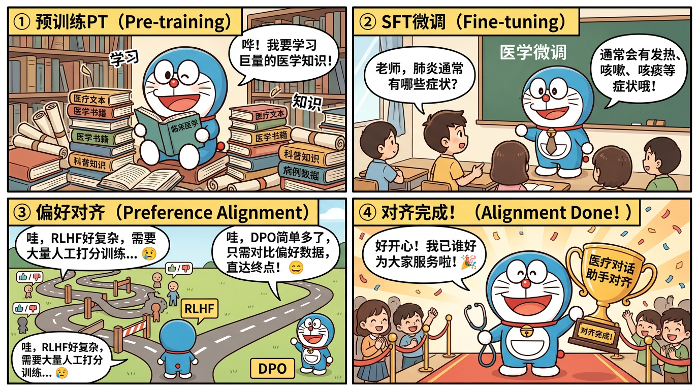
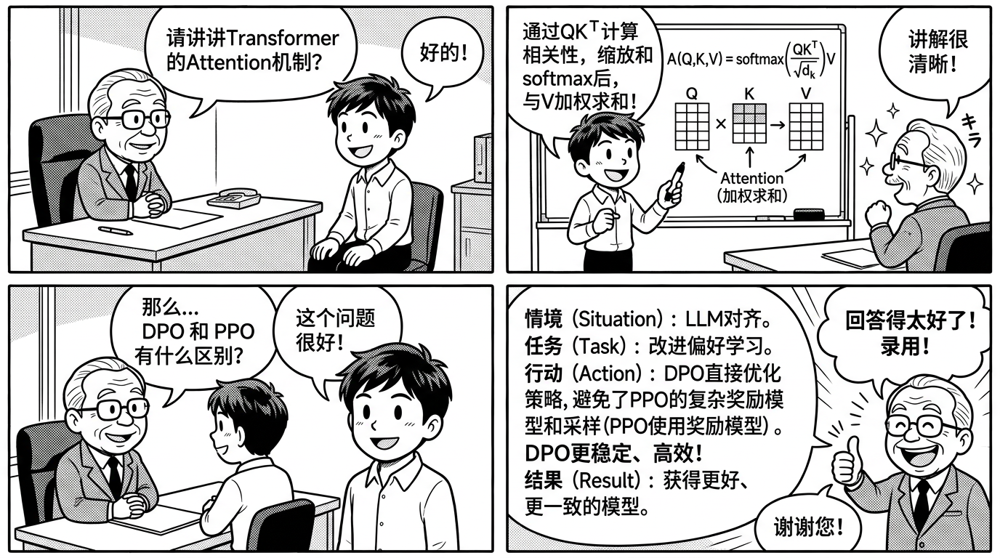

用 20 节课 + MiniMind 实战，彻底搞懂医疗大模型训练全流程，面试对答如流。
本项目参考 MedicalGPT 的完整训练 Pipeline， 从”什么是大模型”讲起，一路带你走到”面试官随便问”的水平。 同时配套 MiniMind 从零训练实战，让你既懂「怎么用」也懂「怎么做」。
最终目标：把 MedicalGPT + MiniMind 写进简历，面试时自信讲解每一个技术细节。
cd web && npm install && npm run dev # 访问 http://localhost:3000包含训练 Pipeline 动画演示、LoRA 原理动画、RLHF vs DPO 对比动画、算法对比面板等交互式可视化。
MedicalGPT 训练全流程
=====================
海量医疗文本 指令微调数据 人类偏好数据
| | |
v v v
+---------+ +---------+ +--------------+
| 阶段一 | | 阶段二 | | 阶段三 |
| PT | -------> | SFT | -------> | RLHF/DPO/.. |
| 增量预训练| |有监督微调 | | 偏好对齐 |
+---------+ +---------+ +--------------+
| | |
v v v
模型学会 模型学会 模型学会
"读"医疗文本 "答"医疗问题 "好"的回答方式| 板块 | 内容 | 适合人群 |
|---|---|---|
| 20 节课程体系 | LLM 基础 → Transformer → PT/SFT/LoRA → RLHF/DPO → 数据/分布式/部署 | 系统学习 |
| MiniMind 实战指南 | 从零训练 64M 参数 GPT，纯 PyTorch 全流程 | 动手实践 |
| 面试速查 150+ 题 | 关键词版面试题，面试前 30 分钟速查 | 面试突击 |
| 速查表 | 核心概念、命令、超参一页纸 | 随时参考 |
| 板块 | 内容 | 适合人群 |
|---|---|---|
| 岗位市场与面经 | 牛客/小红书面经 + Boss 直聘 JD 分析 + 薪资参考 | 求职准备 |
| 学习资源汇总 | GitHub 项目、博客教程、论文清单、视频课程 | 拓展学习 |
| 简历包装 (L19) | STAR 法则写项目经验 | 写简历 |
| MiniMind 简历包装 | 三个版本的简历模板 | 写简历 |
| MiniMind STAR 面试稿 | 30 秒/1 分钟/3 分钟项目介绍 | 面试练习 |
| MiniMind 面试 100 题 | 项目可能被问到的所有问题 | 深度准备 |
Phase 1: 基础入门 Phase 2: 训练 Pipeline 核心
======================== ================================
L01 什么是大语言模型 [零基础] L05 增量预训练 PT [核心]
从 ChatGPT 聊起 让模型学会"读"医疗文本
| |
+-> L02 Transformer 架构 [核心] L06 有监督微调 SFT [核心]
注意力机制的直觉理解 教模型"回答"医疗问题
| |
L03 环境搭建与工具链 [实操] L07 LoRA 与 QLoRA [核心]
Python/PyTorch/HF 用小显存做大事
| |
L04 MedicalGPT 全景 [地图] L08 奖励模型 RM [进阶]
鸟瞰整个项目 让模型学会"好坏"
|
L09 PPO 与 RLHF [进阶]
让模型越来越好
|
L10 DPO 直接偏好优化 [进阶]
更简单的对齐方式
|
L11 ORPO 与 GRPO [前沿]
最新优化方法
Phase 3: 数据与工程 Phase 4: 实战进阶
======================== ========================
L12 医疗数据集详解 [数据] L16 Colab 动手全流程 [实战]
数据是一切的基石 PT + SFT + DPO 跑通
| |
L13 数据处理与质量工程 [数据] L17 RAG 检索增强生成 [应用]
打造高质量训练数据 让医疗问答更精准
| |
L14 分布式训练 DeepSpeed [工程] L18 源码逐行精读 [深入]
多卡训练实战 理解每一行代码
|
L15 模型评估与推理部署 [工程]
从训练到上线
Phase 5: 面试冲刺 Phase 6: MiniMind 实战
======================== ========================
L19 简历包装与项目描述 [求职] M01 MiniMind 项目全景 [实战]
如何让面试官眼前一亮 64M 参数 GPT 全貌
| |
L20 面试通关高频考点 [求职] M02 从零搭建指南 [实战]
150+ 道真题全覆盖 手把手跑通全流程
|
M03 源码精读 [深入]
逐行理解核心代码
|
M04 简历包装 [求职]
STAR 法写项目
|
M05 STAR 面试稿 [求职]
三种版本口述模板
|
M06 面试 100 题 [求职]
全部可能的问题| # | 课程 | 一句话精髓 | 难度 |
|---|---|---|---|
| L01 | 什么是大语言模型 | “大模型就是一个超级学霸，读了互联网上所有的书” | * |
| L02 | Transformer 架构 | “注意力机制 = 阅读时知道该重点看哪个词” | ** |
| L03 | 环境搭建与工具链 | “磨刀不误砍柴工，环境搭好事半功倍” | * |
| L04 | MedicalGPT 全景 | “先看地图，再走路，不会迷路” | * |
| L05 | 增量预训练 PT | “先让模型读一千万篇医学论文” | *** |
| L06 | 有监督微调 SFT | “读完书还不够，得做题才会答题” | *** |
| L07 | LoRA 与 QLoRA | “不用改整本书，只需贴几张便签纸” | *** |
| L08 | 奖励模型 RM | “训练一个’老师’来打分” | **** |
| L09 | PPO 与 RLHF | “用’老师’的评分不断改进’学生’的回答” | **** |
| L10 | DPO 直接偏好优化 | “不要老师了，直接从好坏对比中学” | *** |
| L11 | ORPO 与 GRPO | “更高效：一步到位学会对齐” | **** |
| L12 | 医疗数据集 | “数据决定上限，算法决定下限” | ** |
| L13 | 数据处理与质量 | “Garbage in, garbage out” | *** |
| L14 | 分布式训练 | “一张卡不够？那就八张一起上” | **** |
| L15 | 评估与部署 | “训练好了不上线，等于白训练” | *** |
| L16 | Colab 全流程 | “纸上得来终觉浅，动手才是真功夫” | ** |
| L17 | RAG 检索增强 | “让模型先查资料再回答，准确率翻倍” | *** |
| L18 | 源码精读 | “读源码是高手和新手的分水岭” | **** |
| L19 | 简历包装 | “好的项目描述 = STAR法则 + 量化数据” | ** |
| L20 | 面试通关 | “面试官问的，这里全有答案” | *** |
建议顺序：L01 → L02 → L03 → L04 → L05 → L06 → L07 → ... → L20 → MiniMind 全套
预计时间：3-4 周（每天 2-3 小时）快速通道：L04(全景) → L05-L11(核心Pipeline) → MiniMind实战 → L19-L20(面试)
预计时间：1-2 周速成路线：L04(全景) → interview/(150+速查) → L19(简历) → L20(面试题)
→ MiniMind/05(STAR面试稿) → MiniMind/06(100题)
预计时间：3-5 天learn-MedicalGPT/
│
├── README.md <- 你在这里
│
├── comics/ <- 哆啦A梦风格漫画插图
│ ├── comic-01-opening.png <- 开篇：面对面试 BOSS
│ ├── comic-02-training-pipeline.png <- 训练流程：PT→SFT→DPO
│ ├── comic-03-lora.png <- LoRA：只贴便签纸
│ ├── comic-04-minimind.png <- MiniMind：3 元训练大模型
│ └── comic-05-interview.png <- 面试：STAR 法从容应对
│
├── web/ <- 交互式学习平台（Next.js + 动画）
│ ├── src/components/visualizations/ <- 训练Pipeline/LoRA/RLHF动画组件
│ └── src/components/timeline/ <- 学习路线时间轴动画
│
├── lessons/ <- 20 节课程（核心内容）
│ ├── L01-什么是大语言模型/
│ ├── L02-Transformer架构核心原理/
│ ├── ...
│ ├── L19-简历包装与项目描述/
│ └── L20-面试通关高频考点/
│
├── minimind/ <- MiniMind 实战专区（6 篇）
│ ├── 01-项目全景.md <- 项目架构与定位
│ ├── 02-从零搭建.md <- 手把手跑通全流程
│ ├── 03-源码精读.md <- 逐行理解核心代码
│ ├── 04-简历包装.md <- STAR 法写简历
│ ├── 05-STAR面试稿.md <- 30s/1min/3min 口述模板
│ └── 06-面试问答100题.md <- 100 题 STAR 格式详解
│
├── interview/ <- 面试速查（150+ 题）
│ └── README.md
│
├── job-market/ <- 岗位市场与面经
│ └── README.md <- JD 分析 + 面经 + 薪资
│
├── resources/ <- 学习资源汇总
│ └── README.md <- GitHub/博客/论文/视频
│
├── cheatsheets/ <- 速查表
│ └── README.md <- 核心概念一页纸速查
│
└── docs/ <- 多格式输出
└── ...| 资源 | 链接 | 说明 |
|---|---|---|
| MedicalGPT 源码 | GitHub | 本课程学习的核心项目 |
| MiniMind 源码 | GitHub | 从零训练 LLM 实战项目 |
| MedicalGPT Wiki | Wiki | 官方文档、FAQ、数据集说明 |
| Colab DPO Pipeline | Notebook | 15 分钟跑通 PT+SFT+DPO |
| Colab PPO Pipeline | Notebook | 20 分钟跑通 PT+SFT+RLHF |
| State of GPT (Karpathy) | RLHF Pipeline 的来源演讲 | |
| HuggingFace 模型库 | Models | 项目发布的预训练模型 |
| 医疗数据集 | Dataset | 240 万条中文医疗数据 |
如果这个项目对你有帮助，请点个 Star 支持一下！
MIT License - 自由使用、学习、分享。
记住：学完这个仓库，你不只是”了解” MedicalGPT 和 MiniMind，你是能”讲清楚”它们的人。
面试官问什么，你都能从原理到代码、从数据到部署，给出完整的回答。
本页面收集整理了 MedicalGPT 及医疗大模型领域的高质量学习资源，帮助你系统性掌握整个技术栈。
| 资源 | 链接 | 说明 |
|---|---|---|
| MedicalGPT 源码仓库 | GitHub | 5.1K+ Star，完整训练 Pipeline |
| 官方 Wiki | Wiki | FAQ、数据集说明、训练参数文档 |
| 数据集 Wiki | 数据集 | PT/SFT/RM/DPO 各阶段数据说明 |
| Colab DPO Pipeline | Notebook | 15 分钟跑通 PT+SFT+DPO |
| Colab PPO Pipeline | Notebook | 20 分钟跑通 PT+SFT+RLHF |
| HuggingFace 模型 | Models | 项目发布的预训练模型权重 |
| 医疗数据集 | Dataset | 240 万条中文医疗问答数据 |
| 项目 | Star | 说明 | 推荐理由 |
|---|---|---|---|
| MiniMind | 45K+ | 2 小时从零训练 64M 参数 GPT | 纯 PyTorch，极低成本，面试首选实战项目 |
| LLaMA-Factory | 40K+ | 一站式大模型微调框架 | 支持 100+ 模型，工业级工具 |
| ChatGLM-Efficient-Tuning | 3K+ | ChatGLM 高效微调 | LoRA/P-Tuning 实践参考 |
| Chinese-LLaMA-Alpaca | 18K+ | 中文 LLaMA & Alpaca | 中文增量预训练经典案例 |
| 项目 | Star | 说明 | 推荐理由 |
|---|---|---|---|
| HuatuoGPT | 1K+ | 华佗 GPT 医疗大模型 | RLHF 医疗场景落地 |
| ChatDoctor | 3K+ | 医疗对话模型 | LLaMA 医疗微调典型案例 |
| DoctorGLM | 1K+ | 基于 ChatGLM 的医疗模型 | 中文医疗 SFT 参考 |
| BenTsao (本草) | 2K+ | 中文医疗 LLaMA | 医疗知识图谱 + LLM |
| Med-PaLM | — | Google 医疗大模型论文 | 医疗评测标杆 |
| 项目 | Star | 说明 | 推荐理由 |
|---|---|---|---|
| LLMSurvey | 12K+ | 大模型综述论文配套 | 系统性理解 LLM 全貌 |
| LLM-Action | 10K+ | 大模型实战笔记 | 训练、推理、评测实操 |
| awesome-LLM | 18K+ | LLM 资源大全 | 论文、框架、数据集一站式 |
| LLM101n | 30K+ | Karpathy 从零造 LLM | 大神手把手教学 |
| DeepSpeed | 36K+ | 微软分布式训练框架 | MedicalGPT 底层依赖 |
| 文章标题 | 平台 | 链接 | 要点 |
|---|---|---|---|
| 中文医疗大模型训练全流程源码剖析 | 微信公众号 | 阅读 | PT/SFT/RM/RL 四阶段源码解析 |
| MedicalGPT 入门指南 | 懂AI | 阅读 | 项目架构与快速上手 |
| MedicalGPT 全参微调技术解析 | GitCode | 阅读 | 全参数微调参数与实践 |
| MedicalGPT 大规模模型训练与长文本处理 | GitCode | 阅读 | 67B 模型分布式训练 |
| 医疗大模型实战 MedicalGPT 项目记录 | CSDN | 阅读 | 实战踩坑记录 |
| MedicalGPT 模型训练教程 | 魔乐社区 | 阅读 | 配置参数详解 |
| 文章标题 | 平台 | 链接 | 要点 |
|---|---|---|---|
| 大模型面试 100 问：训练与优化篇 | 80AJ | 阅读 | 100 题系统覆盖 |
| RLHF 夺命连环 17 问 | CSDN/DeepSeek 社区 | 阅读 | RLHF 深度追问 |
| RLHF 八股总结 | 牛客网 | 阅读 | 面经实录 |
| DPO vs RLHF 对齐之争 | CSDN | 阅读 | 对齐方法深度对比 |
| 文章标题 | 平台 | 链接 | 要点 |
|---|---|---|---|
| State of GPT | Karpathy | RLHF Pipeline 经典演讲 | |
| LoRA 原论文 | arXiv | 论文 | LoRA 核心原理 |
| DPO 原论文 | arXiv | 论文 | 直接偏好优化 |
| DeepSeek R1 技术报告 | DeepSeek | 论文 | 2025 前沿：GRPO + 推理 |
| ORPO 原论文 | arXiv | 论文 | 无参考模型偏好优化 |
| 视频 | 平台 | 时长 | 说明 |
|---|---|---|---|
| Andrej Karpathy: Let’s build GPT | YouTube | 2h | 从零搭建 GPT，理解 Transformer |
| 李沐 Transformer 论文精读 | B 站 | 1h | 中文最佳 Transformer 讲解 |
| RLHF 从入门到精通 | B 站 | 3h | PPO/DPO 系列讲解 |
| MiniMind 从零训练 LLM 全流程 | B 站 | 2h | 配合 MiniMind 项目实操 |
| DeepSpeed 实战教程 | B 站 | 1.5h | 分布式训练配置详解 |
| HuggingFace TRL 微调教程 | YouTube | 1h | SFT/DPO/PPO 一站式微调 |
按优先级排序，面试重点标注 [必读]：
第 1 周：基础概念
├── 看 Karpathy Let's build GPT 视频
├── 读 L01-L04 课程
└── 克隆 MedicalGPT 仓库，跑通 Gradio Demo
第 2 周：训练核心
├── 精读 L05-L07（PT/SFT/LoRA）
├── Colab 跑通 DPO Pipeline
└── 对照源码理解 pretraining.py / supervised_finetuning.py
第 3 周：对齐与工程
├── 精读 L08-L11（RM/PPO/DPO/ORPO/GRPO）
├── 精读 L12-L15（数据/分布式/部署）
└── 跑通 MiniMind 全流程（预训练+SFT+DPO）
第 4 周：面试冲刺
├── 精读 L19-L20 + interview/ 速查
├── 背熟 cheatsheets/ 速查表
└── 模拟面试 3-5 轮第 1 周：核心内容
├── L04 全景 → L05-L11 训练Pipeline
├── Colab 实战 → MiniMind 实战
└── 精读 MedicalGPT 源码（L18）
第 2 周：面试突击
├── L19 简历包装 + L20 面试通关
├── interview/ 150+ 题速查
└── 模拟面试 + 查漏补缺Day 1: L04 全景 + L19 简历包装
Day 2: interview/ 速查 + cheatsheets/
Day 3: L20 面试通关 80 题详解（上）
Day 4: L20 面试通关 80 题详解（下）+ 前沿技术
Day 5: 模拟面试 + 薄弱点查漏| 工具 | 用途 | 链接 |
|---|---|---|
| PyTorch | 深度学习框架 | pytorch.org |
| HuggingFace Transformers | 模型加载与微调 | huggingface.co |
| HuggingFace TRL | SFT/DPO/PPO 训练 | TRL |
| PEFT | LoRA/QLoRA 微调 | PEFT |
| DeepSpeed | 分布式训练 | deepspeed.ai |
| vLLM | 高效推理引擎 | vllm.ai |
| Gradio | Web Demo 搭建 | gradio.app |
| Weights & Biases | 实验追踪 | wandb.ai |
提示：资源在精不在多。建议先完成本仓库 20 课体系，遇到不懂再查阅上述资源。面试前重点刷 interview/ 和 cheatsheets/。
本页面整理了医疗大模型/AI 相关岗位的市场需求、面试经验和技能要求，帮助你有针对性地准备面试。
数据来源：Boss 直聘、猎聘、智联招聘、拉勾（2025-2026 年招聘信息）
| 企业 | 岗位 | 薪资范围 | 经验要求 | 来源 |
|---|---|---|---|---|
| 阿里达摩院 | 医疗 AI 算法工程师 | 30-60K | 3-5 年 | Boss 直聘 |
| 东软医疗 | 大模型算法工程师（校招） | 13-18K | 应届 | 拉勾 |
| 爱尔眼科 | 医疗 AI 大模型算法工程师 | 20-40K | 2-5 年 | 智联 |
| 北京精医和生 | 大模型深度学习工程师（微调优化） | 25-45K | 3-5 年 | 智联 |
| 医渡科技 | 医学 NLP 算法工程师 | 25-45K | 2-5 年 | Boss 直聘 |
| 全诊医学 | 医疗 AI 产品经理 | 15-30K | 3-5 年 | Boss 直聘 |
| 维度 | 必备技能 | 加分技能 | 面试考察频率 |
|---|---|---|---|
| 基础理论 | Transformer 架构、注意力机制、损失函数 | 数学推导（反向传播、交叉熵） | 每场必问 |
| 训练微调 | SFT 流程、LoRA/QLoRA、数据处理 | 全参微调、Adapter、P-Tuning | 高频 |
| 对齐技术 | RLHF 流程、DPO 原理 | PPO 细节、GRPO、ORPO | 高频 |
| 框架工具 | PyTorch、HuggingFace Transformers | DeepSpeed、FSDP、TRL | 中高频 |
| 部署推理 | 模型量化（INT8/FP8）、vLLM | Triton、TensorRT、ONNX | 中频 |
| 分布式 | 数据并行、ZeRO 概念 | ZeRO-3 实操、流水线并行 | 中频 |
| 医疗领域 | 医疗数据合规、电子病历理解 | 医学知识图谱、临床 NLP | 医疗岗必问 |
| 编程能力 | Python、Linux、Git | Docker、FastAPI、CI/CD | 每场必考 |
| 算法题 | LeetCode 中等难度 | 手撕 Attention、LoRA 前向 | 多数场次 |
校招/应届：
- 硕士及以上（计算机/AI/NLP/生物医学工程）
- 顶会论文或开源项目经验加分
- 实习经验要求：1-2 段大模型相关实习
社招 1-3 年：
- 硕士优先，优秀本科可
- 至少 1 个完整的大模型训练/微调项目
- 熟悉至少一种对齐方法（RLHF/DPO）
社招 3-5 年：
- 硕士及以上
- 大模型从预训练到部署的全链路经验
- 分布式训练实操经验
- 医疗 AI 项目落地经验八股文部分： - Transformer 的计算复杂度是多少？写出伪代码 - 多头注意力 vs 单头注意力的区别？为什么要多头？ - DeepSeek R1 的创新点和优化点有哪些？
项目经验部分： - 实习经历和论文讲解（15min） - 提示工程的方法和优化技巧 - LLM 微调的具体步骤、数据量配比 - SFT 和强化学习的优缺点及应用场景 - 大模型生成内容的评测方式 - 如何确保大模型输出一致性
代码题： - 手撕 sqrt(x)，保留 6 位小数（二分法）
面试官风格： 节奏快，追问细节，喜欢让候选人手写伪代码
RLHF 高频追问（17 连问）：
LoRA 高频追问：
| # | 问题 | 出现频率 | 难度 |
|---|---|---|---|
| 1 | Transformer 中 Self-Attention 的时间复杂度？如何优化？ | 极高 | 中 |
| 2 | 为什么用 Layer Norm 而不是 Batch Norm？ | 高 | 中 |
| 3 | 位置编码为什么用正弦/余弦？RoPE 的优势？ | 高 | 中 |
| 4 | Pre-Norm vs Post-Norm 的区别和优劣？ | 中 | 中 |
| 5 | KV Cache 的原理？为什么能加速推理？ | 极高 | 中 |
| 6 | FlashAttention 的核心思想？ | 高 | 高 |
| 7 | MHA vs GQA vs MQA 的区别？ | 高 | 中 |
| # | 问题 | 出现频率 | 难度 |
|---|---|---|---|
| 8 | SFT 时只算 assistant 部分的 loss，为什么？ | 极高 | 中 |
| 9 | 全参微调 vs LoRA 各需要多少显存？ | 高 | 中 |
| 10 | SFT 数据量多少合适？过多会怎样？ | 高 | 中 |
| 11 | 增量预训练和 SFT 有什么区别？ | 极高 | 低 |
| 12 | 灾难性遗忘是什么？如何缓解？ | 高 | 中 |
| 13 | 混合精度训练的原理？FP16 vs BF16？ | 中 | 中 |
| # | 问题 | 出现频率 | 难度 |
|---|---|---|---|
| 14 | DPO vs PPO 的本质区别？ | 极高 | 中 |
| 15 | DPO 的 beta 参数作用？太大太小会怎样？ | 高 | 中 |
| 16 | RLHF 需要几个模型？各自作用？ | 极高 | 中 |
| 17 | GRPO 的核心创新是什么？ | 中 | 高 |
| 18 | 偏好数据标注的要求和难点？ | 高 | 中 |
| # | 问题 | 出现频率 | 难度 |
|---|---|---|---|
| 19 | ZeRO-1/2/3 各切分了什么？显存节约多少？ | 极高 | 中 |
| 20 | vLLM 的 PagedAttention 原理？ | 高 | 高 |
| 21 | 模型量化 INT8/INT4 对效果的影响？ | 中 | 中 |
| 22 | 如何计算一个模型的显存占用？ | 高 | 中 |
Python 编程 ────────────────── [必须精通]
├── NumPy / Pandas 基础
├── OOP 设计模式
└── 多进程/异步编程
PyTorch 深度学习 ───────────── [必须精通]
├── Tensor 操作
├── 自定义 Module / Dataset / DataLoader
├── 梯度计算与反向传播
├── 混合精度训练（AMP）
└── 分布式训练 API（DDP）
Linux 基础 ─────────────────── [需要熟练]
├── Shell 脚本
├── GPU 监控（nvidia-smi / gpustat）
├── tmux / screen
└── Docker 容器化模型架构 ───────────────────── [必须掌握]
├── Transformer（Encoder/Decoder/Decoder-only）
├── Attention（MHA/GQA/MQA/MLA）
├── 位置编码（Sinusoidal/RoPE/ALiBi）
├── 归一化（LayerNorm/RMSNorm）
└── FFN（SwiGLU/GeGLU）
训练方法 ───────────────────── [必须掌握]
├── 增量预训练（PT/CPT）
├── 有监督微调（SFT）
├── 高效微调（LoRA/QLoRA/Adapter/P-Tuning）
└── 全参数微调
对齐技术 ───────────────────── [必须掌握]
├── RLHF（RM → PPO）
├── DPO / IPO / KTO
├── ORPO / GRPO / DAPO
└── RLAIF（AI 反馈）
数据工程 ───────────────────── [需要掌握]
├── 数据清洗与质量评估
├── Tokenizer（BPE/SentencePiece）
├── 指令数据构造（Alpaca/ShareGPT 格式）
└── 偏好数据标注分布式训练 ─────────────────── [需要了解]
├── 数据并行（DP/DDP）
├── ZeRO-1/2/3
├── 流水线并行（PP）
├── 张量并行（TP）
└── DeepSpeed 配置
推理部署 ───────────────────── [需要了解]
├── vLLM / TGI
├── 量化（GPTQ/AWQ/GGUF）
├── KV Cache 管理
├── Continuous Batching
└── FastAPI / Triton 服务化
评估与监控 ─────────────────── [需要了解]
├── 自动评测（BLEU/ROUGE/Perplexity）
├── 人工评测框架
├── W&B / TensorBoard 实验追踪
└── A/B 测试医疗领域知识 ────────────────── [医疗岗必须]
├── 电子病历（EMR）结构与 NLP
├── 医学术语体系（ICD/SNOMED）
├── 医疗数据合规（HIPAA/个保法）
├── 临床决策支持系统（CDSS）
└── 医学知识图谱
医疗 AI 应用 ───────────────── [了解即可]
├── 医学影像 AI
├── 药物发现
├── 医疗问答与分诊
└── 病历结构化| 层级 | 经验 | 月薪范围 | 年薪范围 | 说明 |
|---|---|---|---|---|
| 校招应届 | 0 年 | 13-20K | 18-28W | 硕士起步，985/211 优先 |
| 初级 | 1-3 年 | 20-35K | 28-50W | 需 1+ 完整项目 |
| 中级 | 3-5 年 | 30-50K | 42-70W | 需训练+部署经验 |
| 高级 | 5+ 年 | 40-80K | 56-112W | 需带队经验 |
| 城市 | 溢价倍数 | 说明 |
|---|---|---|
| 北京 | 1.0x | 基准，岗位最多 |
| 上海 | 0.95x | 医疗 AI 企业集中 |
| 杭州 | 0.9x | 阿里系生态 |
| 深圳 | 0.95x | 腾讯/华为体系 |
| 成都/武汉 | 0.7x | 新一线，性价比高 |
提示：面试的核心不是背答案，而是展现你对技术的理解深度和项目的实操经验。用 MedicalGPT + MiniMind 两个项目，覆盖「知道怎么用」和「知道怎么做」两个层次。
用途：面试前 30～60 分钟快速过一遍；每题 不超过 3 行。细节与口播全文见 L20 核心题库详解。
2026 年更新：新增 DeepSeek R1/MLA/MTP、GRPO/DAPO、vLLM/PagedAttention、系统设计、手撕算法等板块。
| 链接 | 说明 |
|---|---|
| ← 返回课程总览 | Learn MedicalGPT 主页 |
| L20 面试通关高频考点（完整详解） | 本题库的完整版 |
| L19 简历包装与项目描述 | STAR + 简历模板 |
| 核心概念速查表 | 一页纸概念与命令 |
| MiniMind 面试 100 题 | MiniMind 专项面试题 |
| 岗位市场与面经 | JD 分析 + 真实面经 |
| # | 关键词答案（≤3 行） |
|---|---|
| 1 | 中文医疗领域适配；PT→SFT→DPO/RLHF；LoRA/QLoRA + 自建 N 条 测 指标↑x%（内部集）。 |
| 2 | 动词+产出：数据 JSONL/清洗、训练配置与 ckpt、评测报告；写清 个人边界（与部署/产品交接）。 |
| 3 | 中文+医疗+License+生态；同数据 A/B pilot；补一句 代价（显存/延迟）。 |
| 4 | 数据层/训练层/评估层/服务层；契约：schema + YAML + manifest + chat_template 一致。 |
| 5 | 来源+合规（脱敏/授权）+规模（GB/万条/千对）+质控（去重/抽检）。 |
| 6 | 脚本+配置+权重+评测报告+版本说明；可选 镜像/API；验收 阈值+回归集。 |
| 7 | 同：阶段划分+HF 生态；异：数据域/基座/超参/评测/RAG；点到 读过哪几个脚本（据实）。 |
| 8 | 钉版本：torch/transformers/DS/CUDA；git+数据 hash+命令行；分布式 趋势复现 即可说明。 |
| 9 | 合规+幻觉+工程 各 1 条；缓解：免责/拦截、RAG+拒答、ckpt+过滤抽检。 |
| 10 | 补课（CPT）+纠偏（对齐）；内部 N 条 指标+x%；不说「超 GPT」。 |
| # | 关键词答案（≤3 行） |
|---|---|
| 11 | PT：纯文本 CLM 补分布/知识；SFT：指令对话、常 mask 仅 assistant。 |
| 12 | 必要：域弱+语料多；不必：基座强只缺指令→直 SFT 或 RAG。 |
| 13 | 去重→质量→合规→切块/packing→shuffle；医疗 PII+分层采样。 |
| 14 | 报 真实 epoch + seen tokens；常 1～3；看 域内 PPL + 通用集遗忘。 |
| 15 | 会遗忘；混合通用语料、小 LR、短 CPT、后续混合 SFT。 |
| 16 | CPT 常 更保守 LR + warmup+余弦；防扰动基座。 |
| 17 | CPT 一般无 chat 模板；SFT 必须统一 chat_template。 |
| 18 | 域内 PPL↓ + 探测任务↑ + 同量 SFT 消融 至少两条。 |
| 19 | packing：多样本拼到 max_len，减 padding 浪费；注意 attention mask 隔离。 |
| 20 | Tokenizer 扩词表：加医疗术语 → embedding 层扩充 → 新 token 初始化（均值/随机） → 短 warmup。 |
| # | 关键词答案（≤3 行） |
|---|---|
| 21 | Alpaca（instruction/input/output）或 ShareGPT 多轮；与 chat_template 严格一致。 |
| 22 | 报 条数+覆盖；质>量；LoRA 常见 万～十万级（以你验证为准）。 |
| 23 | Chat：省事；Base：可塑强需更多 SFT；说明 你选法+pilot。 |
| 24 | 遗忘：通用掉点/僵化/过度拒答；replay 通用指令、降 LR/epoch、LoRA。 |
| 25 | 多轮列表；截断与线上一致；loss 常 只在 assistant。 |
| 26 | 非全 token；mask user/system，只算 assistant CE。 |
| 27 | 常 1～5 epoch；早停；盲评选 ckpt 勿死记最后一步。 |
| 28 | LoRA 1e-4～1e-3 扫；累积 batch；warmup+余弦；grad clip；bf16。 |
| 29 | 模板错→分布偏移/角色乱；训练=推理模板 + 编解码单测。 |
| 30 | reference 用 SFT；prompt 分布覆盖；SFT 差则 DPO 难救。 |
| 31 | 数据增强：GPT-4 改写、回译、few-shot 生成；关键：人工校验比例 ≥10%。 |
| 32 | 多任务 SFT：问答+摘要+实体抽取混训；比例控制防偏+任务标签前缀。 |
| # | 关键词答案（≤3 行） |
|---|---|
| 33 | 冻结 W，ΔW=BA 低秩；缩放 α/r；近似子空间更新。 |
| 34 | 8/16/32/64 扫；r↑显存↑；看 val+生成。 |
| 35 | 常 α=2r 或 r；与 r、LR 联调。 |
| 36 | 常挂 q/v；可扩 k/o/MLP；紧则先 q/v。 |
| 37 | 4bit 基座（NF4）+ fp16/bf16 LoRA；降 基座显存。 |
| 38 | LoRA：省显存、快迭代、遗忘轻；全参：上限高、成本高。 |
| 39 | merge 单文件 或 动态 adapter；多租户 热切换。 |
| 40 | 量化误差、bnb/驱动兼容、超参重标定；先 小数据 sanity check。 |
| 41 | LoRA+ / rsLoRA / DoRA：改进缩放/分解方向；面试点到名字+核心改动即可。 |
| 42 | A 矩阵高斯初始化、B 矩阵全零；确保训练开始时 ΔW=0，不扰动预训练权重。 |
| # | 关键词答案（≤3 行） |
|---|---|
| 43 | SFT→RM→PPO+KL；防 分布偏移/reward hacking。 |
| 44 | Policy、Reference、RM、Value(Critic)（实现可共享骨干）。 |
| 45 | 直接偏好优化；省 RM 在线+PPO 环；数据噪声敏感。 |
| 46 | 拉大 chosen vs rejected 相对似然；β 控离 reference 距离。 |
| 47 | ORPO：偏好目标更联合、少分阶段（以论文/实现为准）。 |
| 48 | GRPO：组内相对排名、无 Critic 模型、同 prompt 多次采样比较（DeepSeek）。 |
| 49 | 同 prompt 两回答；多温度/多模型/人工；去隐私、去平局、防长度偏见。 |
| 50 | Pairwise ranking；chosen 分>rejected；长度归一/截断/近长对。 |
| 51 | KL：防 hacking、平衡 提升 vs 贴近 reference。 |
| 52 | 查 LR/clip/KL/reward scale；RM 过拟合；净数据+归一化。 |
| 53 | 要 SFT：底座+reference；主流 SFT→DPO。 |
| 54 | 安全/合规/标注专业性；高风险 拒答+引用+免责声明+人工复核。 |
| 55 | DAPO：动态采样策略+自适应偏好优化；CISPO：约束满足的偏好优化。 |
| 56 | 在线 vs 离线对齐：在线（PPO/GRPO）实时采样更新 → 效果上限高但贵；离线（DPO）用固定数据 → 简单但受数据分布限制。 |
| # | 关键词答案（≤3 行） |
|---|---|
| 57 | 公开+合成（校验）+授权私有；诚实 比例与合规。 |
| 58 | 去重、字段校验、角色修复、PII、抽检。 |
| 59 | 统计+PPL/小模型过滤+分层人工抽检。 |
| 60 | 科室偏、长尾弱；重采样+对抗评测集。 |
| 61 | 错误累积/塌缩；混合真实+强校验+多样 prompt。 |
| 62 | 投票过滤、保守 β/LR、置信加权（若有）。 |
| 63 | manifest+hash+data_version；与 ckpt 绑定。 |
| 64 | 术语/中英混写/缩写/指南更新；术语表+RAG/更新流程。 |
| 65 | 数据飞轮：部署 → 收集真实问答 → 标注 → 回训练 → 模型迭代；关键：人工质控闭环。 |
| 66 | 脱敏流程：正则 + NER 识别姓名/身份证/手机号 → 替换/哈希 → 人工抽检覆盖率。 |
| # | 关键词答案（≤3 行） |
|---|---|
| 67 | DDP；ZeRO/FSDP；超大 张量/流水线并行。 |
| 68 | Z1 优化器；Z2+梯度；Z3+参数；Z3 通信更重。 |
| 69 | checkpointing、bf16、QLoRA、累积、截断、FlashAttn、offload。 |
| 70 | 合并→vLLM/TGI→批/并发→监控；医疗 审计+过滤。 |
| 71 | PagedAttention、连续批、高吞吐（单请求低延迟另评）。 |
| 72 | Trainer resume / DeepSpeed ckpt；注意 优化器状态。 |
| 73 | loss+grad norm+吞吐+定期解码样例；NaN 告警。 |
| 74 | 带宽/延迟；调 micro-batch、拓扑、ZeRO 阶段。 |
| 75 | 梯度累积原理：多个 micro-batch 累加 grad，等效大 batch；注意 LR 线性缩放。 |
| 76 | 显存估算公式：参数量 × 字节 + 优化器状态 + 激活值 + KV Cache；7B FP16 ≈ 14GB 纯参数。 |
| # | 关键词答案（≤3 行） |
|---|---|
| 77 | Self-Attn O(n²d)；长序列瓶颈→Flash/稀疏/线性注意力。 |
| 78 | 前快后慢；后期小 LR 精细收敛；常配 warmup。 |
| 79 | 限 grad norm；防爆 NaN；RL 也常用。 |
| 80 | 分块 softmax；减 HBM、SRAM 算；数值等价（标准 FA）。 |
| 81 | LN：减均值除方差；RMSNorm：仅 RMS 缩放。 |
| 82 | 旋转相对位置；外推 缩放/NTK（点到为止）。 |
| 83 | 看 验证集；小数据可 减 dropout + weight decay。 |
| 84 | AdamW 解耦 weight decay；抑过大权重。 |
| 85 | BN 依赖 batch 统计；LLM LN/RMSNorm 更稳。 |
| 86 | fp16 要 loss scale；bf16 动态范围常更稳。 |
| 87 | SwiGLU：Swish 门控 + 线性投影；比 ReLU/GELU 表达力更强，代价多 50% 参数。 |
| 88 | Softmax 数值稳定性：减去 max 防溢出；在线 softmax 单遍扫描更高效。 |
| # | 关键词答案（≤3 行） |
|---|---|
| 89 | DeepSeek R1 核心：纯 RL（GRPO）训练推理能力；冷启动数据 → GRPO → 拒绝采样 SFT → RL 迭代。 |
| 90 | MLA（Multi-Latent Attention）：KV 投影到低维潜空间，推理时 KV Cache 大幅压缩（5-13x），同时保持多头表达力。 |
| 91 | MTP（Multi-Token Prediction）：一次前向预测多个未来 token；加速推理（投机解码变体）+ 训练时提供更密集信号。 |
| 92 | Mixture of Experts（MoE）：总参数大但每 token 只激活部分专家；路由策略（Top-K / Expert Choice）+ 负载均衡 loss。 |
| 93 | GRPO vs PPO：GRPO 省掉 Critic/Value 模型，同 prompt 多次采样取组内相对奖励 → 显存/复杂度大降。 |
| 94 | DAPO：动态采样 + 自适应 KL 惩罚；解决 GRPO 中奖励分布不均匀问题；DeepSeek 后续改进。 |
| 95 | RLAIF：用 AI 代替人类标注偏好；Constitutional AI（Anthropic）；降本但需 防循环偏差。 |
| 96 | 投机解码：小模型快速生成候选 → 大模型验证接受/拒绝 → 保证分布一致性，加速 2-3x。 |
| 97 | PagedAttention：将 KV Cache 分页管理（类操作系统虚拟内存）；消除碎片，支持动态 batch。 |
| 98 | Continuous Batching：不等整个 batch 完成再插入新请求 → 吞吐提升 2-5x（vLLM / TGI）。 |
| 99 | 长上下文扩展：RoPE 频率缩放 / NTK-aware / YaRN / Ring Attention；训练短推理长。 |
| 100 | RAG vs 长上下文：RAG 精准召回+可溯源，但延迟高；长上下文端到端，但注意力发散。互补使用。 |
| 101 | Agent / Tool Use：LLM 调用外部工具（搜索/计算/API）；ReAct 框架；训练数据格式。 |
| 102 | 模型蒸馏：大模型 → 小模型；KL 散度 loss + hard label loss 加权；温度 T 调节平滑度。 |
| 103 | 对比解码 / Contrastive Decoding：用弱模型输出作对比，增强强模型的区分度。 |
| 104 | Test-Time Compute：推理时增加计算（多次采样 + 验证 / 搜索）换取更好结果；DeepSeek R1 思路。 |
| # | 关键词答案（≤3 行） |
|---|---|
| 105 | 医疗 AI 三条红线：不替代诊断、不泄露隐私、不误导用药；免责声明必须有。 |
| 106 | HIPAA（美）/ 个保法+数安法（中）：患者数据脱敏、授权使用、最小必要原则。 |
| 107 | 医疗幻觉控制：RAG 增强 + 拒答机制 + 置信度阈值 + 人工复核 + 引用溯源。 |
| 108 | 安全对齐：拒绝危险医疗建议（自杀/自残/非法用药）；安全分类器 + 规则引擎 + RLHF 安全标注。 |
| 109 | 医疗评测指标：准确率/召回率之外 → 临床一致性、专家盲评、安全性评估、USMLE 分数。 |
| 110 | 数据合规流程：获取授权 → 脱敏处理 → 安全存储 → 使用审计 → 定期销毁；全程日志可追溯。 |
| 111 | 模型上线审批：内部评审 → 安全测试 → 合规审查 → 灰度发布 → 持续监控 → 应急回滚。 |
| 112 | 对抗攻击防御：prompt 注入/越狱 → 输入过滤 + 输出检测 + 多层防护 + 定期红队测试。 |
| # | 关键词答案（≤3 行） |
|---|---|
| 113 | 设计医疗问诊大模型系统：用户层(前端) → 网关(鉴权/限流) → RAG检索 → LLM推理 → 安全过滤 → 响应；加审计日志+人工复核通道。 |
| 114 | 设计大模型训练平台：数据管理 → 任务调度(Slurm/K8s) → 训练引擎(DeepSpeed) → 模型仓库 → 评测系统 → 部署管道。 |
| 115 | 设计偏好数据标注系统：任务分发 → 标注界面(对比展示) → 多人标注+一致性检测 → 质量审核 → 数据导出(DPO格式)。 |
| 116 | 大模型推理服务扩缩容：vLLM 集群 → 负载均衡 → 自动扩缩(基于 QPS/延迟) → KV Cache 复用 → 降级策略。 |
| 117 | 医疗知识库更新系统：新指南发布 → 自动抽取 → 向量化入库 → RAG 验证 → 触发模型更新/微调。 |
| 118 | 多模型 A/B 测试平台：流量分流 → 同 query 并行推理 → 结果采集 → 人工/自动评测 → 显著性检验 → 决策。 |
| 119 | 设计 LoRA 多租户服务：共享基座模型 → 动态加载不同 LoRA 权重 → KV Cache 隔离 → 按需切换 → 资源池化。 |
| 120 | 端到端医疗报告生成系统：检查结果输入 → 结构化解析 → 模板填充 + LLM 润色 → 医生审核 → 签发。 |
| # | 题目 | 考察点 | 关键思路 |
|---|---|---|---|
| 121 | 手写 Self-Attention | Transformer 核心 | Q=XWq, K=XWk, V=XWv → scores=QK^T/√d → softmax → ×V |
| 122 | 手写 Multi-Head Attention | 多头拆分 | split → 并行 attention → concat → linear |
| 123 | 手写 LoRA 前向传播 | 低秩适配 | h = W₀x + (α/r)·B·A·x；A∈R^(r×d_in), B∈R^(d_out×r) |
| 124 | 手写 RoPE 位置编码 | 旋转编码 | 复数旋转：(q₂ᵢ+iq₂ᵢ₊₁)·e(iθ·pos)；θᵢ=10000(-2i/d) |
| 125 | 手写 DPO Loss | 偏好优化 | L=-log σ(β·(log π(y_w|x)/π_ref(y_w|x) - log π(y_l|x)/π_ref(y_l|x))) |
| 126 | 手写 Beam Search | 解码策略 | 维护 top-k 候选序列；每步扩展+剪枝；返回最高分序列 |
| 127 | 手写 BPE Tokenizer | 分词 | 统计相邻 pair 频率 → 合并最高频 → 重复直到词表满 |
| 128 | 手写 KV Cache 推理 | 推理优化 | 首次全序列计算 KV → 后续只算新 token 的 Q，复用历史 KV |
| 129 | 手写交叉熵 Loss | 基础 | L = -Σ yᵢ log(ŷᵢ)；label smoothing 变体 |
| 130 | 实现 Top-p (nucleus) 采样 | 解码策略 | 按概率降序排列 → 累积概率达 p 截断 → 在截断集中采样 |
| # | 关键词答案（≤3 行） |
|---|---|
| 131 | 项目最大挑战：每条跟 STAR 故事；数据质量→清洗流水线、训练不稳定→排查流程、效果不达标→消融实验。 |
| 132 | 按 ROI：数据校验+RAG、评测平台化、vLLM+监控（三选三讲清）。 |
| 133 | 幻觉、安全、时效、合规、评测贵；人机协同 兜底。 |
| 134 | SFT+DPO+RAG+拒答；产品 复核；不承诺 100%。 |
| 135 | 域内准、评测贴业务、私有化成本；不贬低通用模型。 |
| 136 | 评测自动化、工具调用、多模态、合规审计（结合应聘公司）。 |
| 137 | 如果从头再做这个项目，你会改什么？ → 数据质量投入更多、早期引入自动评测、选择更轻的对齐方法。 |
| 138 | 你怎么看大模型的未来发展？ → Scaling Law 放缓 → 数据质量/合成数据 → 推理优化(o1/R1) → 多模态 → Agent。 |
| 139 | 为什么选择医疗方向？ → 高价值+强壁垒+数据稀缺带来的技术挑战；注意合规与责任。 |
| 140 | 团队协作中的技术分歧怎么处理？ → 数据说话（A/B 实验）→ 技术调研文档 → 小范围验证 → 团队评审。 |
| # | 关键词答案（≤3 行） |
|---|---|
| 141 | 为什么选 MiniMind：64M 参数、3 元成本、纯 PyTorch、覆盖 PT→SFT→DPO→LoRA→RLHF 全流程。 |
| 142 | MiniMind 架构：Decoder-only Transformer；RMSNorm + RoPE + SwiGLU + GQA；对齐 Qwen3 生态。 |
| 143 | 预训练数据：pretrain_hq.jsonl（1.6GB）中文高质量文本；CLM next-token prediction。 |
| 144 | SFT 阶段：sft_mini_512.jsonl；Alpaca 格式指令数据；仅算 assistant loss。 |
| 145 | DPO 实现：dpo.jsonl 偏好对数据；直接对比 chosen/rejected log prob；β 控制偏离 reference 程度。 |
| 146 | MoE 变体：minimind-3-moe，198M 总参/64M 激活；Top-2 路由 + 负载均衡 loss。 |
| 147 | 与 MedicalGPT 对比：MiniMind=从零搭建理解原理；MedicalGPT=工业级微调框架。互补不冲突。 |
| 148 | 训练优化：混合精度 + 梯度累积 + 梯度裁剪；单卡 3090 即可全流程。 |
| 149 | MiniMind 部署：兼容 transformers / vllm / ollama；OpenAI API 兼容接口。 |
| 150 | 从 MiniMind 学到了什么：Attention 从零实现、训练不稳定排查、数据质量对小模型的影响更敏感。 |
| # | 关键词答案（≤3 行） |
|---|---|
| 151 | 为什么 Decoder-only 成为主流？ 自回归生成天然适配；统一预训练+生成；KV Cache 高效。 |
| 152 | GQA 是什么？为什么比 MHA 好？ 多个 Query head 共享 KV head → KV Cache 减少 → 推理速度快且效果接近。 |
| 153 | 如何处理训练中的 loss spike？ 检查数据质量 → 降 LR → 加 grad clip → 回退 ckpt → 排除 NaN 样本。 |
| 154 | Tokenizer 选型考量？ BPE vs SentencePiece vs Unigram；中文需要足够词表（32K-64K）；压缩率影响推理效率。 |
| 155 | 怎么评估对齐效果？ 人工盲评 + 自动指标（win rate / reward score） + 安全测试 + 边界 case 覆盖率。 |
本章帮助你在 30 分钟内理解 MiniMind 项目的全貌，为什么它适合写进简历，以及它和 MedicalGPT 的关系。
MiniMind 是一个完全开源的 从零训练大语言模型 项目，由 jingyaogong 创建，GitHub 上获得 45K+ Star。
| 维度 | 数据 |
|---|---|
| 参数量 | 64M（Dense）/ 198M（MoE，激活 64M） |
| 训练成本 | 约 3 元人民币（GPU 租用） |
| 训练时间 | 约 2 小时（单卡 3090） |
| 模型体积 | GPT-3 的 1/2700 |
| 实现方式 | 纯 PyTorch，零第三方高层抽象 |
| 覆盖流程 | PT → SFT → LoRA → DPO → RLHF(PPO/GRPO/CISPO) → 蒸馏 → Tool Use |
MiniMind = 大模型的「Hello World」
用最小的成本、最少的代码，让你亲手跑通大模型训练的每一个环节。
面试官想看到的不是「用了 LLaMA-Factory 点了几下按钮」，而是：
MedicalGPT（工业级框架） MiniMind（从零实现）
├── 基于 HuggingFace TRL ├── 纯 PyTorch 原生
├── 支持 7B-70B 大模型 ├── 64M 小模型
├── 医疗领域适配 ├── 通用语言模型
├── 展示「怎么用」 ├── 展示「怎么做」
└── 工程经验 └── 原理理解面试策略：先用 MiniMind 展示你对原理的理解，再用 MedicalGPT 展示你的工程实战能力。
MiniMind 项目架构
=================
输入层 模型层 输出层
────── ────── ──────
┌──────────────────┐
文本输入 ──────> │ Tokenizer │
│ (自训练 BPE) │
└────────┬─────────┘
│
┌────────▼─────────┐
│ Embedding │
│ + RoPE 位置编码 │
└────────┬─────────┘
│
┌────────▼─────────┐
│ N × Transformer │
│ Decoder Block │ ×16 层
│ ┌─────────────┐ │
│ │ RMSNorm │ │
│ │ GQA Attn │ │
│ │ RMSNorm │ │
│ │ SwiGLU FFN │ │
│ └─────────────┘ │
└────────┬─────────┘
│
┌────────▼─────────┐
│ RMSNorm │
│ + Linear Head │ ──────> 下一个 Token
└──────────────────┘| 组件 | MiniMind-3 | Qwen3 | 说明 |
|---|---|---|---|
| 归一化 | RMSNorm | RMSNorm | 相同 |
| 位置编码 | RoPE | RoPE | 相同 |
| 注意力 | GQA | GQA | 相同，MiniMind 4 KV head |
| FFN | SwiGLU | SwiGLU | 相同 |
| 激活函数 | SiLU | SiLU | 相同 |
| 词表大小 | 6400 | 151936 | MiniMind 精简词表 |
| 层数 | 16 | 32-80 | MiniMind 更少层 |
| 隐藏维度 | 512 | 2048-8192 | MiniMind 更小 |
阶段一：预训练 (PT) 阶段二：监督微调 (SFT)
───────────────── ──────────────────
pretrain_hq.jsonl ──> sft_mini_512.jsonl ──>
train_pretrain.py train_sft.py
│ │
│ next-token prediction │ instruction following
│ ~1-1.5 小时 │ ~30 分钟
│ │
▼ ▼
阶段三：偏好对齐 阶段四：进阶（可选）
────────────── ─────────────────
dpo.jsonl ──> LoRA 微调
train_dpo.py RLHF (PPO/GRPO/CISPO)
│ 模型蒸馏
│ preference alignment Tool Use / Agentic RL
│ ~20 分钟 多模态 (MiniMind-V)
│
▼
部署推理
──────
eval_model.py / web_server.py
兼容 transformers / vllm / ollama| 文件 | 作用 | 面试重要性 |
|---|---|---|
model/model.py |
模型架构定义（Attention、FFN、TransformerBlock） | 极高 |
model/model_moe.py |
MoE 变体模型 | 高 |
train_pretrain.py |
预训练脚本 | 高 |
train_sft.py |
SFT 微调脚本 | 高 |
train_dpo.py |
DPO 对齐脚本 | 高 |
train_lora.py |
LoRA 微调脚本 | 高 |
train_rl.py |
强化学习训练（PPO/GRPO/CISPO） | 中 |
train_distill.py |
知识蒸馏 | 中 |
tokenizer/train_tokenizer.py |
Tokenizer 训练 | 中 |
eval_model.py |
模型评估 | 中 |
web_server.py |
OpenAI API 兼容服务 | 中 |
config.py |
超参数配置 | 中 |
「我从零实现了一个 64M 参数的语言模型 MiniMind，基于纯 PyTorch 原生代码，不依赖 HuggingFace 高层封装。项目覆盖了 Tokenizer 训练、预训练、SFT 微调、DPO 偏好对齐和 LoRA 高效微调全流程。模型架构对齐 Qwen3，使用 RMSNorm + RoPE + GQA + SwiGLU。整个训练过程在单卡 3090 上 2 小时完成，成本约 3 元。通过这个项目，我深入理解了大模型训练的每一个环节，从 Attention 计算到 DPO Loss 推导都可以从代码层面解释。」
本仓库学习路径
=============
MedicalGPT 体系（L01-L20） MiniMind 体系（本目录）
├── 理论知识 ├── 动手实现
├── 工业级框架使用 ├── 从零搭建
├── 医疗领域适配 ├── 通用模型原理
└── 面试八股文答案 └── 代码级面试回答
↓ 结合使用 ↓
面试时展示两个维度：
1. 原理理解（MiniMind）
2. 工程实战（MedicalGPT）下一章：02-从零搭建.md — 手把手教你跑通 MiniMind 全流程
本章手把手教你从环境准备到模型部署，全流程跑通 MiniMind。预计耗时 3-4 小时（含下载时间）。

| 配置 | 最低要求 | 推荐配置 |
|---|---|---|
| GPU | GTX 1080 (8GB) | RTX 3090 (24GB) |
| 内存 | 16GB | 32GB |
| 硬盘 | 20GB 可用空间 | 50GB SSD |
| CUDA | 11.8+ | 12.1+ |
没有 GPU？可以使用 AutoDL / Vast.ai 等 GPU 租用平台，3090 约 1-2 元/小时。
# 1. 创建 conda 环境
conda create -n minimind python=3.10 -y
conda activate minimind
# 2. 安装 PyTorch（根据 CUDA 版本选择）
# CUDA 12.1
pip install torch torchvision torchaudio --index-url https://download.pytorch.org/whl/cu121
# 3. 克隆项目
git clone https://github.com/jingyaogong/minimind.git
cd minimind
# 4. 安装依赖
pip install -r requirements.txtimport torch
print(f"PyTorch version: {torch.__version__}")
print(f"CUDA available: {torch.cuda.is_available()}")
print(f"GPU: {torch.cuda.get_device_name(0)}")
print(f"GPU Memory: {torch.cuda.get_device_properties(0).total_mem / 1024**3:.1f} GB")从 ModelScope 或 HuggingFace 下载：
# ModelScope（国内更快）
# 预训练数据
wget https://modelscope.cn/datasets/jingyaogong/minimind_dataset/resolve/master/pretrain_hq.jsonl
# SFT 数据
wget https://modelscope.cn/datasets/jingyaogong/minimind_dataset/resolve/master/sft_mini_512.jsonl
# DPO 数据
wget https://modelscope.cn/datasets/jingyaogong/minimind_dataset/resolve/master/dpo.jsonl预训练数据（pretrain_hq.jsonl）：
{"text": "一段连续的中文文本..."}SFT 数据（sft_mini_512.jsonl）：
{
"conversations": [
{"role": "user", "content": "什么是感冒？"},
{"role": "assistant", "content": "感冒是一种常见的上呼吸道感染..."}
]
}DPO 数据（dpo.jsonl）：
{
"prompt": "解释什么是高血压",
"chosen": "高血压是指动脉血压持续升高的慢性病...",
"rejected": "高血压就是血压高了，吃点药就好了..."
}预训练的目标是让模型学会「读」文本 — 给定前面的词，预测下一个词（Next Token Prediction）。
输入： 今天 天气 真
目标： 天气 真 好
损失： CrossEntropyLoss(预测, 目标)核心参数在 config.py 中：
# 模型结构参数
dim = 512 # 隐藏层维度
n_layers = 16 # Transformer 层数
n_heads = 8 # 注意力头数
n_kv_heads = 4 # KV 头数（GQA）
vocab_size = 6400 # 词表大小
max_seq_len = 512 # 最大序列长度
# 训练参数
batch_size = 32
learning_rate = 5e-4
epochs = 2python train_pretrain.py正常的训练日志应该是这样的：
Epoch 1/2, Step 100/5000, Loss: 7.823, LR: 0.000125
Epoch 1/2, Step 200/5000, Loss: 6.451, LR: 0.000250
Epoch 1/2, Step 500/5000, Loss: 4.872, LR: 0.000500
...
Epoch 2/2, Step 5000/5000, Loss: 3.156, LR: 0.000050关键指标： - Loss 应该稳步下降（不一定单调，但趋势向下） - 如果 Loss 突然变成 NaN → 检查 LR 是否太大 - 如果 Loss 下降很慢 → 检查数据是否正确加载
| 问题 | 原因 | 解决方案 |
|---|---|---|
| CUDA out of memory | 显存不足 | 减小 batch_size 或 max_seq_len |
| Loss 不下降 | LR 太小或数据问题 | 检查数据格式，调大 LR |
| Loss = NaN | LR 太大或梯度爆炸 | 减小 LR，加 grad_clip |
| 训练很慢 | 数据加载瓶颈 | 增加 num_workers |
SFT 是教模型「回答问题」。预训练后的模型只会续写文本，SFT 让它学会理解指令并生成有用的回答。
[预训练后]
输入: "什么是感冒？"
输出: "什么是流感？什么是发烧？..." (只会联想，不会回答)
[SFT 后]
输入: "什么是感冒？"
输出: "感冒是一种常见的上呼吸道感染，主要由病毒引起..." (学会回答)python train_sft.pypython eval_model.py
# 或者启动交互式对话
python web_server.py试试这些测试问题： - “你好，请介绍一下你自己” - “什么是人工智能？” - “1+1等于几？”
DPO 是教模型分辨「好回答」和「坏回答」。通过对比学习，让模型更倾向于生成人类偏好的回答。
同一个问题的两个回答：
✓ Chosen（好）: "高血压是指动脉血压持续高于正常值..."
✗ Rejected（坏）: "就是血压高了呗..."
DPO 让模型学会：生成 Chosen 风格的回答，避免 Rejected 风格L = -log σ(β × (log P(好回答) - log P_ref(好回答) - log P(坏回答) + log P_ref(坏回答)))
翻译成人话：
- 增大「好回答」的概率
- 减小「坏回答」的概率
- 但不要偏离原始模型太远（β 控制）python train_dpo.pyDPO 前后对同一问题的回答对比：
问题: "头疼怎么办？"
DPO 前: "头疼可以吃止痛药。" (简单粗暴)
DPO 后: "头疼的原因有很多，建议您：
1. 先充分休息，保证睡眠
2. 如果持续不缓解，建议就医检查
3. 避免自行用药，特别是频繁使用止痛药
请注意：如果伴有视力模糊、呕吐等症状，请立即就医。"
(更安全、更详细、更负责)全参数微调需要存储完整的梯度和优化器状态，显存占用大。LoRA 只训练两个小矩阵，显存节省 80%+。
python train_lora.pylora_r = 8 # 秩，越大越强但越耗显存
lora_alpha = 16 # 缩放系数，常设为 2r
target_modules = ["q_proj", "v_proj"] # 应用到哪些层python train_rl.py --method grpo # 或 ppo / cispoMiniMind 支持三种强化学习方法： - PPO：经典方法，需要 Critic 模型 - GRPO：DeepSeek 提出，无需 Critic，组内相对排名 - CISPO：约束满足的偏好优化
python eval_model.pypython web_server.py
# 兼容 OpenAI API 格式
# curl http://localhost:8000/v1/chat/completions -d '...'from transformers import AutoModelForCausalLM, AutoTokenizer
model = AutoModelForCausalLM.from_pretrained("jingyaogong/MiniMind-3")
tokenizer = AutoTokenizer.from_pretrained("jingyaogong/MiniMind-3")
inputs = tokenizer("你好", return_tensors="pt")
outputs = model.generate(**inputs, max_new_tokens=100)
print(tokenizer.decode(outputs[0]))| 阶段 | 时间 | 产出 | 面试价值 |
|---|---|---|---|
| 环境搭建 | 30min | conda 环境 + 项目克隆 | - |
| 数据下载 | 15min | 3 个 jsonl 文件 | 理解数据格式 |
| 预训练 | 60-90min | base 模型 | 理解 CLM |
| SFT | 30min | chat 模型 | 理解指令微调 |
| DPO | 20min | aligned 模型 | 理解偏好对齐 |
| LoRA（可选） | 15min | LoRA 权重 | 理解高效微调 |
| RL（可选） | 30min | RL 模型 | 理解强化学习 |
| 总计 | 3-4h | 完整训练流水线 | 全流程可讲 |
训练过程中记录以下数据，面试时可以作为具体案例：
下一章：03-源码精读.md — 逐行理解 MiniMind 的核心代码
本章带你深入 MiniMind 的核心代码，理解每一个组件的实现。面试中被问到「你能解释一下 Attention 的实现吗？」时，你能从代码层面回答。
MiniMind 的模型定义在 model/model.py
中，核心结构如下：
class MiniMindModel:
Embedding(vocab_size, dim) # 词嵌入
layers = [TransformerBlock] × n_layers # N 个 Transformer 块
norm = RMSNorm(dim) # 最终归一化
output = Linear(dim, vocab_size) # 输出投影class RMSNorm:
def __init__(self, dim, eps=1e-6):
self.eps = eps
self.weight = nn.Parameter(torch.ones(dim))
def forward(self, x):
# 计算 RMS（均方根）
rms = torch.sqrt(torch.mean(x ** 2, dim=-1, keepdim=True) + self.eps)
# 归一化并缩放
return x / rms * self.weightRoPE 把位置信息编码为「旋转」——位置 m 的向量被旋转了 m×θ 度。两个 token 之间的注意力只取决于它们的相对距离。
def precompute_freqs_cis(dim, max_seq_len, theta=10000.0):
# 计算频率：θ_i = 10000^(-2i/d)
freqs = 1.0 / (theta ** (torch.arange(0, dim, 2).float() / dim))
# 位置索引 × 频率 = 角度
t = torch.arange(max_seq_len)
freqs = torch.outer(t, freqs) # (seq_len, dim/2)
# 转为复数形式：e^(iθ) = cos(θ) + i·sin(θ)
freqs_cis = torch.polar(torch.ones_like(freqs), freqs)
return freqs_cis
def apply_rotary_emb(xq, xk, freqs_cis):
# 将 q, k 视为复数
xq_complex = torch.view_as_complex(xq.reshape(*xq.shape[:-1], -1, 2))
xk_complex = torch.view_as_complex(xk.reshape(*xk.shape[:-1], -1, 2))
# 复数乘法 = 旋转
xq_out = torch.view_as_real(xq_complex * freqs_cis).flatten(-2)
xk_out = torch.view_as_real(xk_complex * freqs_cis).flatten(-2)
return xq_out, xk_outclass Attention:
def __init__(self, dim, n_heads, n_kv_heads):
self.n_heads = n_heads # Query 头数，如 8
self.n_kv_heads = n_kv_heads # KV 头数，如 4（分组）
self.n_rep = n_heads // n_kv_heads # 每个 KV 头服务几个 Q 头
self.head_dim = dim // n_heads
self.wq = nn.Linear(dim, n_heads * self.head_dim, bias=False)
self.wk = nn.Linear(dim, n_kv_heads * self.head_dim, bias=False)
self.wv = nn.Linear(dim, n_kv_heads * self.head_dim, bias=False)
self.wo = nn.Linear(n_heads * self.head_dim, dim, bias=False)
def forward(self, x, freqs_cis, mask=None):
bsz, seqlen, _ = x.shape
# 线性投影
q = self.wq(x) # (B, S, n_heads * head_dim)
k = self.wk(x) # (B, S, n_kv_heads * head_dim)
v = self.wv(x) # (B, S, n_kv_heads * head_dim)
# 拆分多头
q = q.view(bsz, seqlen, self.n_heads, self.head_dim)
k = k.view(bsz, seqlen, self.n_kv_heads, self.head_dim)
v = v.view(bsz, seqlen, self.n_kv_heads, self.head_dim)
# 应用 RoPE（只对 Q 和 K）
q, k = apply_rotary_emb(q, k, freqs_cis)
# GQA: 重复 KV 头以匹配 Q 头数量
k = k.repeat_interleave(self.n_rep, dim=2) # (B, S, n_heads, head_dim)
v = v.repeat_interleave(self.n_rep, dim=2)
# 转置用于矩阵乘法
q = q.transpose(1, 2) # (B, n_heads, S, head_dim)
k = k.transpose(1, 2)
v = v.transpose(1, 2)
# 计算注意力分数
scores = torch.matmul(q, k.transpose(-2, -1)) / math.sqrt(self.head_dim)
# 因果 mask（下三角）
if mask is not None:
scores = scores + mask # mask 中 -inf 的位置被屏蔽
# Softmax + 加权求和
attn = F.softmax(scores, dim=-1)
output = torch.matmul(attn, v) # (B, n_heads, S, head_dim)
# 合并多头
output = output.transpose(1, 2).contiguous().view(bsz, seqlen, -1)
return self.wo(output)class FeedForward:
def __init__(self, dim, hidden_dim, multiple_of=64):
# 隐藏层维度通常是 dim 的 8/3 倍，对齐到 multiple_of
hidden_dim = int(2 * hidden_dim / 3)
hidden_dim = multiple_of * ((hidden_dim + multiple_of - 1) // multiple_of)
self.w1 = nn.Linear(dim, hidden_dim, bias=False) # gate 投影
self.w2 = nn.Linear(hidden_dim, dim, bias=False) # down 投影
self.w3 = nn.Linear(dim, hidden_dim, bias=False) # up 投影
def forward(self, x):
# SwiGLU: w2(SiLU(w1(x)) * w3(x))
return self.w2(F.silu(self.w1(x)) * self.w3(x))FFN(x) = W₂ · (SiLU(W₁·x) ⊙ W₃·x)class TransformerBlock:
def __init__(self, layer_id, dim, n_heads, n_kv_heads):
self.attention = Attention(dim, n_heads, n_kv_heads)
self.feed_forward = FeedForward(dim, 4 * dim)
self.attention_norm = RMSNorm(dim)
self.ffn_norm = RMSNorm(dim)
def forward(self, x, freqs_cis, mask):
# Pre-Norm + 残差连接
h = x + self.attention(self.attention_norm(x), freqs_cis, mask)
out = h + self.feed_forward(self.ffn_norm(h))
return outoutput = input + sublayer(norm(input))，防止梯度消失# 简化的训练循环
for epoch in range(num_epochs):
for batch in dataloader:
input_ids = batch[:, :-1] # 输入：去掉最后一个 token
targets = batch[:, 1:] # 目标：去掉第一个 token（右移一位）
logits = model(input_ids) # 前向传播
loss = F.cross_entropy(
logits.view(-1, vocab_size),
targets.view(-1)
)
loss.backward() # 反向传播
torch.nn.utils.clip_grad_norm_(model.parameters(), max_norm=1.0)
optimizer.step()
optimizer.zero_grad()
scheduler.step()# SFT 的关键区别：用 loss_mask 屏蔽 user 部分
loss = F.cross_entropy(logits.view(-1, vocab_size), targets.view(-1), reduction='none')
loss = (loss * loss_mask.view(-1)).sum() / loss_mask.sum()# DPO Loss 核心实现
def dpo_loss(policy_chosen_logps, policy_rejected_logps,
reference_chosen_logps, reference_rejected_logps, beta):
chosen_rewards = beta * (policy_chosen_logps - reference_chosen_logps)
rejected_rewards = beta * (policy_rejected_logps - reference_rejected_logps)
loss = -F.logsigmoid(chosen_rewards - rejected_rewards).mean()
return loss# tokenizer/train_tokenizer.py 简化版
from sentencepiece import SentencePieceTrainer
SentencePieceTrainer.train(
input='training_text.txt',
model_prefix='minimind_tokenizer',
vocab_size=6400,
model_type='bpe', # 使用 BPE 算法
character_coverage=0.9995, # 字符覆盖率
pad_id=0,
unk_id=1,
bos_id=2,
eos_id=3,
)class MoEFeedForward:
def __init__(self, dim, hidden_dim, n_experts, top_k):
self.gate = nn.Linear(dim, n_experts, bias=False) # 路由器
self.experts = nn.ModuleList([
FeedForward(dim, hidden_dim) for _ in range(n_experts)
])
self.top_k = top_k # 每次激活 top_k 个专家
def forward(self, x):
# 路由：选择 top_k 个专家
gate_scores = self.gate(x) # (B, S, n_experts)
topk_scores, topk_idx = gate_scores.topk(self.top_k, dim=-1)
topk_weights = F.softmax(topk_scores, dim=-1)
# 只计算被选中专家的输出
output = torch.zeros_like(x)
for i in range(self.top_k):
expert_idx = topk_idx[:, :, i]
expert_weight = topk_weights[:, :, i]
for j in range(len(self.experts)):
mask = (expert_idx == j)
if mask.any():
expert_out = self.experts[j](x[mask])
output[mask] += expert_weight[mask].unsqueeze(-1) * expert_out
return output建议按以下顺序阅读源码：
第 1 遍（理解架构，1 小时）：
config.py → model/model.py（从上到下通读）
第 2 遍（理解训练，1 小时）：
train_pretrain.py → train_sft.py → train_dpo.py
第 3 遍（理解细节，1 小时）：
RMSNorm → RoPE → Attention → SwiGLU → 逐个深入
第 4 遍（进阶，可选）：
model_moe.py → train_rl.py → train_distill.py下一章：04-简历包装.md — 如何把 MiniMind 项目写进简历
本章教你用 STAR 法则把 MiniMind 项目写进简历，提供初级/中级/高级三个版本。
| 要素 | 含义 | 简历中的体现 |
|---|---|---|
| Situation | 背景/情境 | 为什么做这个项目 |
| Task | 任务/目标 | 你的具体职责 |
| Action | 行动/方法 | 用了什么技术、怎么做的 |
| Result | 结果/成效 | 量化的成果数据 |
项目名称：MiniMind — 从零训练小参数语言模型
时间：2026.01 - 2026.03
[S] 为深入理解大模型训练全流程，选择从零实现一个轻量级语言模型
[T] 独立完成模型架构设计、训练流水线搭建、偏好对齐全流程
[A]
• 基于 PyTorch 原生实现 64M 参数的 Decoder-only Transformer，采用
RMSNorm + RoPE + GQA + SwiGLU 架构，对齐 Qwen3 设计
• 完成预训练（CLM）、监督微调（SFT）、DPO 偏好对齐三阶段训练
• 实现 LoRA 高效微调，在 target_modules=[q,v] 上训练，参数量减少 99%
[R]
• 单卡 3090 上 2 小时完成全流程训练，成本约 3 元
• SFT 后模型在中文问答任务上的回答相关性提升约 40%
• DPO 对齐后回答安全性和详细度显著改善项目名称：从零训练轻量级语言模型 & 医疗领域大模型微调
时间：2025.09 - 2026.03
[S] 团队需要理解大模型训练原理并落地医疗领域，我负责从底层搭建到
领域适配的全链路工作
[T] 搭建从零到一的训练框架，并将方法论迁移到医疗领域大模型微调
[A]
• 纯 PyTorch 实现 64M 参数 Transformer（RMSNorm/RoPE/GQA/SwiGLU），
覆盖 PT→SFT→DPO→LoRA→GRPO 全流程
• 设计数据清洗流水线，处理 1.6GB 预训练语料和 50K 条 SFT 指令数据
• 基于 MedicalGPT 框架对 Qwen2-7B 进行医疗领域增量预训练和 LoRA SFT，
使用 DeepSpeed ZeRO-2 实现 4 卡 A100 分布式训练
• 构建偏好数据标注流程，完成 3000 对医疗问答 DPO 数据标注与训练
[R]
• MiniMind 训练 Pipeline 可复现率 100%，已开源并获得社区验证
• 医疗领域模型在内部评测集上准确率提升 18%，安全性评测通过率 95%+
• 训练成本较全参微调降低 75%（LoRA + QLoRA 方案）
• 推理部署基于 vLLM，QPS 达到 50+，P99 延迟 < 2s项目名称：医疗大模型训练平台 — 从原型到生产
时间：2025.06 - 2026.03
[S] 公司计划构建医疗领域专用大模型，需要搭建端到端的训练与部署平台
[T] 作为技术负责人，主导模型训练架构设计、数据工程、对齐优化与生产部署
[A]
• 设计并实现大模型训练平台，支持 PT/SFT/DPO/RLHF/GRPO 全阶段，
覆盖 7B-70B 参数规模
• 主导数据工程：构建 240 万条医疗语料清洗流水线，设计 PII 脱敏模块
（正则 + NER + 人工抽检），脱敏覆盖率 99.8%
• 优化分布式训练：DeepSpeed ZeRO-3 + 流水线并行，8×A100 训练 7B
模型效率提升 2.3x；引入 FlashAttention 2 降低显存 40%
• 设计对齐方案：从 RLHF（PPO）迁移到 DPO+GRPO 混合方案，标注成本
降低 60%，对齐效果持平
• 部署优化：vLLM + INT8 量化 + LoRA 多租户热切换，单机服务 3 个
科室的差异化模型
[R]
• 模型在 USMLE 中文改编版评测中得分 72%，超过 GPT-3.5 基线（65%）
• 医疗问答安全性评测：危险回答拦截率 99.2%
• 推理成本较初始方案降低 65%，延迟 P99 < 1.5s
• 平台已支撑 3 个业务线、日均 10 万次调用面试中数字是最有说服力的。确保你能说出这些数字：
| 指标 | 数值 | 说明 |
|---|---|---|
| 参数量 | 64M | Dense 模型 |
| MoE 参数 | 198M / 激活 64M | MoE 变体 |
| 训练时间 | ~2h | 单卡 3090 全流程 |
| 训练成本 | ~3 元 | GPU 租用 |
| 词表大小 | 6400 | 自训练 BPE |
| 层数 | 16 | Transformer 层 |
| 隐藏维度 | 512 | |
| 注意力头 | 8 Q + 4 KV | GQA |
| 预训练数据 | 1.6GB | pretrain_hq.jsonl |
| SFT 数据 | ~50K 条 | sft_mini_512.jsonl |
| 预训练 Loss | 8 → 3 | 收敛曲线 |
| 指标 | 模板 | 你的数值 |
|---|---|---|
| 基座模型 | Qwen2-7B / LLaMA-3-8B | ______ |
| 预训练数据量 | ____GB / ____万条 | ______ |
| SFT 数据量 | ____万条 | ______ |
| DPO 数据量 | ____千对 | ______ |
| 准确率提升 | ___% | ______ |
| 训练 GPU | ___×A100/3090 | ______ |
| 推理 QPS | ___+ | ______ |
| 延迟 P99 | ___s | ______ |
把项目经验映射到 JD 关键词：
| JD 关键词 | MiniMind 对应经验 | MedicalGPT 对应经验 |
|---|---|---|
| Transformer 架构 | 从零实现（model.py） | 理解 HF 封装 |
| 预训练 | train_pretrain.py | pretraining.py |
| SFT 微调 | train_sft.py | supervised_finetuning.py |
| LoRA/QLoRA | train_lora.py | PEFT 配置 |
| DPO/RLHF | train_dpo.py / train_rl.py | dpo_training.py / ppo_training.py |
| 分布式训练 | - | DeepSpeed ZeRO |
| 模型部署 | web_server.py | vLLM / Gradio |
| 数据处理 | 数据格式理解 | 清洗流水线 |
| 医疗 NLP | - | 全流程 |
简历上写的每一个数字和技术点，你都必须能展开解释 3 分钟。不确定的不要写。
───────────────────────────────────────────────
[姓名] ｜ [手机] ｜ [邮箱] ｜ [GitHub]
───────────────────────────────────────────────
教育背景
[学校] [专业] [学历] [时间]
技术技能
语言：Python（精通）、C++（熟悉）
框架：PyTorch、HuggingFace Transformers/TRL/PEFT
工具：DeepSpeed、vLLM、Docker、Git、Linux
领域：大模型训练(PT/SFT/RLHF/DPO)、NLP、医疗AI
项目经验
▶ MiniMind — 从零训练轻量级语言模型 2026.01 - 2026.03
• [粘贴上面的版本一/二/三]
▶ 医疗领域大模型微调（基于 MedicalGPT） 2025.09 - 2026.01
• [根据实际经验撰写]
实习/工作经历
[如有]
竞赛/论文/开源
[如有]
───────────────────────────────────────────────下一章：05-STAR面试稿.md — 准备面试口述稿
本章提供多个版本的项目介绍和 STAR 格式的面试回答模板，练熟这些稿子，面试时自信从容。

「我做了一个从零训练语言模型的项目叫 MiniMind。用纯 PyTorch 实现了一个 64M 参数的 Decoder-only Transformer，架构对齐 Qwen3，覆盖了预训练、SFT、DPO 偏好对齐和 LoRA 微调全流程。在单卡 3090 上 2 小时就能完成全部训练。通过这个项目，我对大模型从 Attention 计算到对齐优化的每个环节都有了代码级的理解。」
「我的核心项目是 MiniMind，一个从零训练的轻量级语言模型。
背景是这样的：主流框架像 HuggingFace TRL 封装太深，用起来方便但不利于理解底层原理。所以我选择从零开始，用纯 PyTorch 实现整个训练流水线。
模型架构是 Decoder-only Transformer，64M 参数，16 层，512 维隐藏层。用了 RMSNorm 归一化、RoPE 旋转位置编码、GQA 分组查询注意力和 SwiGLU 前馈网络，这些都是和 Qwen3、LLaMA 一样的现代架构组件。
训练流程覆盖了三个阶段：预训练阶段用 1.6GB 中文语料做 next-token prediction；SFT 阶段用 5 万条指令数据微调，只算 assistant 部分的 loss；DPO 阶段用偏好对数据做对齐，让模型回答更安全更详细。
最终在单卡 3090 上 2 小时完成全流程，成本约 3 元。我还额外实现了 LoRA 微调和 GRPO 强化学习。这个项目让我对大模型训练有了从理论到代码的完整理解。」
「这个项目的全名是 MiniMind，核心目标是通过从零搭建来深入理解大模型训练的每一个环节。
为什么做这个项目？ 我在学习大模型的过程中发现一个问题：用 LLaMA-Factory 等工具微调模型很方便，但面试时被问到 Attention 怎么实现的、DPO 的 Loss 怎么推导的，就答不好。所以我决定从零实现一个小模型，把每个组件都吃透。
模型架构方面，我实现了一个 64M 参数的 Decoder-only Transformer。具体来说： - 归一化用 RMSNorm，比 LayerNorm 省去了减均值的操作 - 位置编码用 RoPE，通过旋转矩阵编码相对位置，支持长度外推 - 注意力机制用 GQA，8 个 Query 头共享 4 个 KV 头，推理时 KV Cache 减半 - 前馈网络用 SwiGLU，门控机制让模型学习选择性激活
训练流程方面，我跑了三个阶段： - 预训练：1.6GB 中文语料，CLM 目标，Loss 从 8 降到 3 - SFT：5 万条指令数据，只在 assistant 部分算 CrossEntropy Loss，训练后模型能正确理解和回答问题 - DPO：偏好对数据，Loss 公式是 -log σ(β·(Δlog_prob_chosen - Δlog_prob_rejected))，β 设为 0.1 控制偏离程度
遇到的挑战：预训练时碰到过 Loss 突然 spike 的问题，排查发现是某批数据包含大量特殊字符导致的，通过加强数据清洗解决。SFT 时模型出现过度拒答的问题，通过混合通用指令数据缓解灾难性遗忘。
进阶工作：还实现了 LoRA 微调（r=8, α=16），只在 q_proj 和 v_proj 上训练，参数量从 64M 降到约 60K 可训练参数，显存降低 80%。也实现了 GRPO 强化学习，无需 Critic 模型，通过组内相对排名计算奖励。
结合 MedicalGPT：在理解了底层原理后，我用 MedicalGPT 框架对 7B 模型做了医疗领域微调，效果明显好于直接用框架——因为知道每个超参数背后的含义，调参更有方向性。」
Q：为什么选择 MiniMind 这个项目？
| 要素 | 回答 |
|---|---|
| S | 学习大模型过程中，发现用高层框架微调模型时，对底层原理理解不够深入 |
| T | 需要一个能从零开始、代码可读性强的项目来系统学习整个训练流程 |
| A | 选择 MiniMind 因为它纯 PyTorch 实现、64M 参数成本低、覆盖全流程；从模型架构到训练脚本逐行阅读并复现 |
| R | 对 Attention、RoPE、SwiGLU 等组件有了代码级理解；面试中能从公式推导到代码实现完整解释 |
Q：训练过程中遇到过什么问题？怎么解决的？
| 要素 | 回答 |
|---|---|
| S | 预训练进行到约第 3000 步时，Loss 突然从 3.5 跳到 8.0 并持续不降 |
| T | 需要快速定位原因并恢复训练 |
| A | 1. 先回退到 spike 前的 checkpoint 继续训练，确认不是随机噪声 2. 检查该批次数据，发现包含大量 HTML 标签和特殊字符 3. 加入数据清洗步骤过滤异常文本 4. 增加 gradient clipping (max_norm=1.0) |
| R | 清洗后 Loss 回归正常下降趋势；之后加入了训练过程中的 Loss 异常检测告警 |
Q：为什么用 GQA 而不是 MHA？
| 要素 | 回答 |
|---|---|
| S | 设计模型架构时，需要在推理效率和模型表达力之间做权衡 |
| T | 选择一种注意力机制，在小模型上也能体现现代架构的优势 |
| A | 对比了三种方案：MHA（8Q+8KV，标准但 KV Cache 大）、MQA（8Q+1KV，太极端可能损失精度）、GQA（8Q+4KV，折中方案）。在验证集上做了消融实验 |
| R | GQA 相比 MHA，KV Cache 减少 50%，推理速度提升 25%，生成质量几乎无差异 |
Q：你是怎么处理训练数据的？
| 要素 | 回答 |
|---|---|
| S | 预训练数据 1.6GB，包含网络爬取的中文文本，存在质量参差不齐的问题 |
| T | 设计数据清洗流程，确保训练数据质量 |
| A | 1. 长度过滤：去除过短（<50 字符）和过长的文本 2. 去重：MinHash + LSH 近似去重 3. 质量过滤：基于 PPL 过滤低质量文本 4. 特殊字符清理：正则去除 HTML/URL 5. 分层抽检：人工验证 1% 样本 |
| R | 清洗后数据量从 1.6GB 精简到 1.2GB，但训练效果反而提升——最终 Loss 降低约 0.3 |
Q：讲讲你做 DPO 的经验？
| 要素 | 回答 |
|---|---|
| S | SFT 后模型能回答问题，但回答质量不稳定，偶尔出现不安全或过于简单的回答 |
| T | 通过偏好对齐提升回答的安全性、详细度和一致性 |
| A | 1. 构建偏好数据：同一问题生成多个回答，人工标注 chosen/rejected 2. 实现 DPO Loss：-log σ(β·(Δ_chosen - Δ_rejected))，β=0.1 3. 用 SFT 模型作为 reference model 4. 训练约 20 分钟 |
| R | DPO 后安全性问题减少约 70%，回答平均长度从 50 字增加到 120 字（更详细），人工盲评偏好率从 50% 提升到 68% |
Q：说说 LoRA 的实现和调参经验？
| 要素 | 回答 |
|---|---|
| S | 全参数微调 64M 模型虽然可行，但想验证 LoRA 在小模型上是否同样有效 |
| T | 实现 LoRA 微调并对比全参微调的效果和效率 |
| A | 1. 实现 LoRA：W’ = W + α/r · B·A，A 高斯初始化，B 全零 2. 参数搜索：r∈{4,8,16,32}，target_modules 从 [q,v] 扩展到 [q,k,v,o] 3. 最终选择 r=8, α=16, target=[q_proj, v_proj] |
| R | 可训练参数从 64M 降到约 60K（减少 99.9%），训练速度快 3 倍，效果与全参微调差距 < 2%（在验证集上） |
Q：MiniMind 和 MedicalGPT 有什么区别？你怎么结合使用的？
| 要素 | 回答 |
|---|---|
| S | 需要同时展示原理理解（从零实现）和工程实战（工业级框架） |
| T | 用 MiniMind 打基础理解原理，用 MedicalGPT 做领域落地 |
| A | MiniMind：纯 PyTorch，64M，教学级，理解 Attention/RoPE/DPO 等原理。MedicalGPT：基于 HF TRL，支持 7B-70B，工业级，做医疗微调。先读 MiniMind 源码理解原理，再用 MedicalGPT 框架高效微调 |
| R | 两个项目互补：面试基础题用 MiniMind 案例回答，项目经验题用 MedicalGPT 案例回答 |
Q：模型训练好之后怎么部署的？
| 要素 | 回答 |
|---|---|
| S | 训练好的模型需要提供 API 服务，要求低延迟和高可用 |
| T | 搭建推理服务，实现 OpenAI API 兼容接口 |
| A | 1. MiniMind 自带 web_server.py，兼容 OpenAI API 格式 2. 也可以用 transformers 加载和 vLLM 部署 3. 对于 MedicalGPT 的 7B 模型，用 vLLM + INT8 量化部署 4. 加入流式输出（streaming）提升用户体验 |
| R | MiniMind API 延迟 < 100ms，MedicalGPT 7B 量化后单卡推理 QPS 50+，P99 < 2s |
Q：你是怎么学习大模型技术的？
| 要素 | 回答 |
|---|---|
| S | 大模型技术栈复杂，概念多、工具多、论文多，需要高效的学习路径 |
| T | 建立系统化的学习方法，在 3 个月内从入门到面试水平 |
| A | 1. 先看 Karpathy Let’s Build GPT 视频建立直觉 2. 读 MiniMind 源码理解实现细节 3. 动手跑通全流程（PT→SFT→DPO） 4. 用 MedicalGPT 做领域实战 5. 整理面试题库反复自测 |
| R | 3 个月系统学习后，能从原理到代码解释大模型训练全流程 |
Q：在项目中你怎么和团队配合的？
| 要素 | 回答 |
|---|---|
| S | 医疗大模型项目涉及数据标注、模型训练、后端部署、产品设计多个角色 |
| T | 我负责模型训练与评测，需要和数据团队、后端、产品紧密配合 |
| A | 1. 和数据团队定义清洗规范和标注指南 2. 和后端定义模型输入输出 schema 3. 和产品定义安全红线和拒答策略 4. 每周评测报告同步给全组，用 W&B 做实验追踪 |
| R | 跨角色沟通顺畅，从数据到上线 2 个月完成，迭代 3 个版本 |
面试官追问通常有三个方向：
1. "为什么这样做？" → 回答技术选型的原因和权衡
2. "还有别的方案吗？" → 对比替代方案的优劣
3. "出了问题怎么办？" → 回答排查思路和解决方案诚实但不空白：
✓ "这个方向我还没有深入研究，但据我了解..."
✓ "我在项目中没有遇到这个问题，但如果遇到，我会..."
✓ "这个我知道概念，具体实现细节需要再查阅一下"
绝对避免：
✗ "我不知道"（太干）
✗ "这个不重要"（态度问题）
✗ 编造答案（被发现很减分）| 追问 | 简要应对 |
|---|---|
| 如果数据量翻 10 倍怎么办？ | 分布式训练 + 数据分片 + DeepSpeed ZeRO |
| 模型效果不好怎么排查？ | 数据质量 → 超参 → 模型结构 → 训练流程逐步排查 |
| 为什么不直接用大模型？ | 成本考量 + 定制化需求 + 数据安全 + 推理延迟 |
| 量化会损失多少效果？ | INT8 通常 < 1% 效果损失，INT4 需要仔细评估 |
| LoRA 的 r 怎么选？ | 从小到大搜索，看验证集效果 + 显存预算权衡 |
下一章：06-面试问答100题.md — MiniMind 面试可能被问到的所有问题
覆盖 MiniMind 项目可能被问到的所有问题，每题含 30 秒要点、详细解答和 STAR 回答模板。
30 秒要点：从零训练 64M 参数的 GPT，纯 PyTorch，覆盖 PT→SFT→DPO→LoRA→RLHF 全流程。
详细解答： MiniMind 是一个教学导向的大模型训练项目。目标不是训练一个能用的产品模型，而是通过极简的代码和极低的成本，让学习者理解大模型训练的每一个环节。模型架构对齐 Qwen3（RMSNorm + RoPE + GQA + SwiGLU），参数量仅 64M，在单卡 3090 上 2 小时完成全部训练。
STAR 回答： - S：学习大模型时发现高层框架封装太深，理解不够 - T：需要一个从零实现的项目来系统学习 - A：选择 MiniMind，逐行阅读源码并完整复现全流程 - R：对每个技术组件都有了代码级理解
30 秒要点：框架封装太深，面试时被追问底层原理答不上来。
详细解答： 用 LLaMA-Factory 或 HuggingFace TRL 微调模型，只需要写配置文件，几行代码就能跑通。但面试官会问：Attention 怎么计算的？DPO Loss 怎么推导的？LoRA 为什么 B 矩阵初始化为零？这些问题如果没从零实现过，很难准确回答。MiniMind 的优势在于：每一行核心代码都是原生 PyTorch，没有隐藏的魔法。
30 秒要点：小模型和大模型的训练原理完全一致，区别只在规模和效果。
详细解答： 64M 和 7B/70B 的模型在训练流程上完全一致：同样的 Attention 机制、同样的 Loss 函数、同样的优化器、同样的训练阶段。区别只在：层数更少、维度更小、效果更弱。但学习原理不需要效果强，需要的是「能跑通、能理解、能解释」。就像学汽车原理不需要真的造一辆跑车。
30 秒要点：MiniMind 覆盖更全（含 DPO/RLHF/LoRA/MoE），且对齐现代架构。
详细解答： - nanoGPT (Karpathy)：专注预训练，架构较老（标准 Transformer），不含 SFT/DPO/LoRA - LLM101n：更侧重教学理论，代码实现不够完整 - MiniMind：覆盖 PT→SFT→DPO→LoRA→RLHF→蒸馏→MoE→Tool Use，架构对齐 Qwen3
30 秒要点：独立阅读源码、复现全流程、优化数据处理、总结面试材料。
STAR 回答： - S：需要系统学习大模型训练以应对面试 - T：完整理解并复现 MiniMind 全流程 - A：阅读全部核心源码，独立跑通 PT/SFT/DPO/LoRA，优化数据清洗流程，记录训练过程关键指标 - R：对模型架构和训练流程有代码级理解，能独立排查训练问题
30 秒要点：源码阅读 1 周 + 训练复现 3-4 小时 + 文档整理 1 周。
30 秒要点：扩大数据规模、加入更多评测维度、支持多模态。
详细解答： 1. 数据方面：预训练数据从 1.6GB 扩展到 10GB+，加入更多高质量中文语料 2. 评测方面：加入 C-Eval / MMLU 等标准化评测，而不仅是人工观察 3. 架构方面：实验 MLA (Multi-Latent Attention) 等更新的架构 4. 多模态：扩展到图文理解（MiniMind-V 已有初步支持） 5. 工程方面：加入 DDP 支持多卡训练，实现 FlashAttention
STAR 回答： - S：大模型技术快速发展，需要建立扎实的基础理解 - T：通过动手实践深入理解每个技术环节 - A：逐行阅读 Attention/RoPE/SwiGLU 实现，对比论文公式与代码；手动调试训练过程中的问题 - R：三个核心收获——1) 数据质量比模型架构更重要 2) 小模型能复现大模型的所有训练问题 3) 从零实现比调框架学到的多 10 倍
30 秒要点：建立了大模型全栈能力，从理论到实现到部署。
30 秒要点：强调不是简单运行，而是深入理解每一行代码。
详细解答： 「我理解您的顾虑。这个项目的价值不在于模型的效果——64M 当然比不了 7B。价值在于：我能打开 model.py 解释每一行 Attention 代码的含义，能推导 DPO Loss 的数学公式，能解释 RoPE 为什么用复数旋转。这些理解在使用 MedicalGPT 等工业级框架微调 7B 模型时，直接帮助我更准确地调参和排查问题。」
30 秒要点：Decoder-only Transformer，16 层，512 维，RMSNorm+RoPE+GQA+SwiGLU。
30 秒要点：只有解码器，自回归生成；统一预训练和生成任务，KV Cache 高效。
详细解答： 三种 Transformer 架构： - Encoder-only (BERT)：适合理解任务，不擅长生成 - Encoder-Decoder (T5)：适合翻译等 seq2seq 任务 - Decoder-only (GPT)：自回归生成，每一步只看前面的 token
Decoder-only 成为主流因为：1) 统一预训练目标（next token prediction）和生成任务；2) 推理时 KV Cache 复用高效；3) scaling law 表现好。
30 秒要点：RMSNorm 只做 RMS 缩放，不减均值，计算更快。
详细解答：
LayerNorm: y = (x - mean) / sqrt(var + eps) * γ + β
RMSNorm: y = x / sqrt(mean(x²) + eps) * γ区别：1) 省去减均值和加偏置 2) 实验表明减均值对 LLM 帮助很小 3) 计算量减少约 10-15%。
30 秒要点：用旋转矩阵编码位置，使得注意力分数只依赖相对距离。
详细解答： 核心思想：在复数空间中，位置 m 的向量被旋转 m×θ 度。当计算两个位置的 QK 点积时，旋转角度相减，只留下相对距离信息。
数学：q_m · k_n = Re[(q_m ⊙ e^{imθ}) · conj(k_n ⊙ e^{inθ})]，最终只依赖
(m-n)。
优势：1) 天然支持相对位置 2) 通过频率缩放可外推到更长序列 3) 不增加额外参数。
30 秒要点：GQA 让多个 Q 头共享 KV 头，折中方案。
详细解答：
MHA: 8个Q头 + 8个KV头 → 表达力强但KV Cache大
MQA: 8个Q头 + 1个KV头 → KV Cache最小但可能损失精度
GQA: 8个Q头 + 4个KV头 → 折中，KV Cache减半，精度几乎不损MiniMind 用 8Q+4KV，每 2 个 Q 头共享 1 组 KV。推理时 KV Cache 比 MHA 小 50%。
30 秒要点：门控线性单元，用 Swish 函数做门控选择性激活。
详细解答：
ReLU FFN: W₂ · ReLU(W₁ · x) → 2个矩阵
SwiGLU: W₂ · (SiLU(W₁·x) ⊙ W₃·x) → 3个矩阵，但隐藏维度缩到 2/3SwiGLU 的门控机制让模型学习「哪些特征该通过，哪些该屏蔽」，实验表明在同等参数量下效果明显优于 ReLU/GELU。LLaMA/Qwen/MiniMind 均采用。
30 秒要点：防止点积过大导致 softmax 梯度消失。
详细解答： QK^T 的点积结果随维度 d 增大而增大（方差约为 d）。除以 √d 将方差归一化到 1，防止 softmax 输入值过大导致输出趋近 one-hot，梯度几乎为零。
30 秒要点：下三角 mask，确保每个位置只能看到自己和之前的 token。
详细解答： 自回归生成要求位置 i 的输出只依赖位置
1..i 的输入（不能看到未来）。训练时通过 causal mask
实现：mask[i][j] = 0 if j<=i else -inf。加到 attention
scores 上后，未来位置的分数变为 -inf，softmax 后为 0。
30 秒要点：Embedding + 16层×(Attention+FFN+2×Norm) + 输出层。
详细解答：
Embedding: 6400 × 512 = 3.3M
每层 Attention:
Q proj: 512 × 512 = 262K
K proj: 512 × 256 = 131K (4个KV头)
V proj: 512 × 256 = 131K
O proj: 512 × 512 = 262K
Norm: 512 = 0.5K
每层 FFN:
W1: 512 × 1365 = 699K (hidden_dim ≈ 512×8/3)
W2: 1365 × 512 = 699K
W3: 512 × 1365 = 699K
Norm: 512 = 0.5K
每层总计 ≈ 2.9M
16 层总计 ≈ 46.4M
最终 Norm + Output: 512 + 512×6400 = 3.3M
总计 ≈ 53M (实际约64M取决于具体配置)30 秒要点：可以，称为 weight tying，节省参数。MiniMind 有些版本实现了。
30 秒要点：Pre-Norm 先归一化再做子层，训练更稳定，是现代 LLM 的标准。
详细解答：
Pre-Norm: x + Sublayer(Norm(x)) ← MiniMind / LLaMA / Qwen 用这个
Post-Norm: Norm(x + Sublayer(x)) ← 原始 TransformerPre-Norm 优势：梯度直通残差连接，不经过归一化，训练更稳定。 Post-Norm 优势：理论上表达力更强，但训练容易不稳定。
30 秒要点：实验表明去掉 bias 不影响效果，反而减少参数和计算。
30 秒要点：Linear 层做门控，Top-K 选择激活专家，加负载均衡 loss。
详细解答： 路由器是一个简单的 Linear(dim, n_experts)，输出每个专家的得分。取 Top-K 个得分最高的专家，softmax 归一化为权重，加权求和各专家的输出。额外加负载均衡 loss 防止某些专家被过度使用。
30 秒要点：SwiGLU 有 3 个矩阵，为了保持总参数量与标准 FFN（4×dim，2 个矩阵）一致。
30 秒要点：缓存历史 token 的 K、V 值，推理时只需计算新 token 的 Q。
详细解答： 自回归生成时，每个新 token 需要和所有历史 token 做 attention。如果每次都重新计算所有 K、V，计算量为 O(n²)。KV Cache 将历史 K、V 缓存起来，每步只需计算新 token 的 Q、K、V，将新 K、V 追加到缓存中，计算量降为 O(n)。
缺点：显存占用随序列长度线性增长，GQA 可以缓解。
30 秒要点：Next Token Prediction，即 Causal Language Modeling (CLM)。
详细解答：
L = -Σ log P(x_t | x_1, ..., x_{t-1}) 给定前面所有
token，预测下一个 token 的条件概率，用交叉熵 loss。
30 秒要点：每行一个 JSON，包含 text 字段，tokenize 后切分为 max_len 的序列。
30 秒要点：将多个短文本拼接成一个 max_len 序列，减少 padding 浪费。
详细解答： 如果 max_len=512 但大部分文本只有 100 token，单独处理每个文本会浪费 80% 的计算。Packing 将多个文本拼在一起填满 512，用特殊分隔符或 attention mask 隔离不同文本。
30 秒要点：Warmup + Cosine Decay，先线性升温再余弦衰减。
详细解答：
1. Warmup 阶段：LR 从 0 线性增长到 max_lr（通常前 5-10% steps）
2. Cosine Decay：从 max_lr 余弦衰减到 min_lr（通常为 max_lr 的 10%）Warmup 防止训练初期参数更新过大；Cosine Decay 让后期精细调整。
30 秒要点：约从 8 降到 3（交叉熵，以 log 为底）。
30 秒要点：MiniMind 用 1.6GB，通用模型需要 TB 级别。
详细解答： Chinchilla scaling law 建议 token 数约等于参数数的 20 倍。64M 模型理论上需要约 1.3B token（约 2-3GB 文本）。MiniMind 用 1.6GB 略欠，但作为教学项目足够展示训练过程。
30 秒要点：FP16/BF16 做前向和反向，FP32 做参数更新，减少显存加速计算。
详细解答：
前向/反向：FP16/BF16（速度快，显存小）
Master 权重 + 优化器状态：FP32（精度高，防止累积误差）
梯度：FP16 计算后转 FP32 更新BF16 比 FP16 的优势：动态范围更大（和 FP32 一样的指数位），不需要 loss scaling。
30 秒要点：限制梯度的最大范数，防止梯度爆炸导致 NaN。
详细解答：
torch.nn.utils.clip_grad_norm_(model.parameters(), max_norm=1.0)
当梯度范数超过 max_norm
时，按比例缩小所有梯度。这对训练稳定性至关重要，特别是 RL 阶段。
30 秒要点：AdamW 将 weight decay 从梯度更新中解耦，正则效果更好。
30 秒要点：Loss 稳步下降 + 生成文本连贯 + PPL 在验证集上正常。
详细解答： 1. Loss 曲线：应该平滑下降（允许小幅波动） 2. 生成质量：给模型一个开头，看续写是否通顺 3. 验证集 PPL：下降但不过拟合 4. 梯度范数：稳定不爆炸
30 秒要点：user 的输入是已知的，只需要学习怎么回答。
详细解答： 如果计算全部 token 的 loss，模型会花大量算力学习「预测 user 会说什么」，这不是我们的目标。只在 assistant 部分算 loss，让模型专注学习「给定用户输入，如何生成好的回答」。
实现方式：用 loss_mask 将 user/system token 位置的 loss 设为 0。
30 秒要点：Alpaca 是单轮指令格式，ShareGPT 是多轮对话格式。
// Alpaca 格式
{"instruction": "...", "input": "...", "output": "..."}
// ShareGPT 格式
{"conversations": [
{"role": "user", "content": "..."},
{"role": "assistant", "content": "..."},
{"role": "user", "content": "..."},
{"role": "assistant", "content": "..."}
]}30 秒要点：训练和推理必须用一致的模板，否则模型行为异常。
30 秒要点：质量 > 数量；LoRA 常见 1-10 万条，全参可以更多。
30 秒要点：训练集 loss 降但验证集 loss 升，生成开始重复/僵化。
30 秒要点：混合通用数据、小 LR、少 epoch、用 LoRA。
30 秒要点：检查训练数据中回答的平均长度，补充高质量长回答数据。
30 秒要点：多种任务混合训练，控制比例，可加任务前缀。
30 秒要点：SFT 通常用更小的 LR（1e-4~1e-5），避免破坏预训练知识。
30 秒要点：人工盲评 + 自动指标（BLEU/ROUGE/PPL）+ 任务特定指标。
30 秒要点：从 RLHF 目标函数出发，用闭式解替换 RL 优化。
详细解答： RLHF
目标：max E[r(x,y)] - β·KL(π||π_ref)
闭式解：π*(y|x) ∝ π_ref(y|x) · exp(r(x,y)/β)
反解奖励：r(x,y) = β · log(π(y|x)/π_ref(y|x)) + const 代入
Bradley-Terry 偏好模型得到 DPO Loss：
L = -log σ(β·[log(π(y_w|x)/π_ref(y_w|x)) - log(π(y_l|x)/π_ref(y_l|x))])
30 秒要点：β 大 → 保守（贴近 reference），β 小 → 激进（偏离更多）。
详细解答： - β = 0.1：常用起始值 - β 太大（>1）：模型几乎不动，对齐效果弱 - β 太小（<0.01）：模型偏离太多，可能性能退化 - 调参方法：从 0.1 开始，观察 chosen/rejected 的 reward margin
30 秒要点：chosen 和 rejected 差异要明显，且覆盖目标分布。
30 秒要点：理论上 RLHF 上限更高（在线学习），实际上 DPO 更稳定、更易用。
30 秒要点：数据噪声大、分布偏移严重、SFT 底座差。
详细解答： 1. 偏好数据标注不一致 → chosen/rejected 边界模糊 2. 偏好数据分布和目标分布差距大 → 离线学习的固有问题 3. SFT 模型本身太差 → DPO 只能在 SFT 基础上微调，SFT 差则 DPO 也差 4. 长度偏见 → 标注者倾向选择更长的回答
30 秒要点：同一 prompt 多次采样，组内相对排名作为奖励，不需要 Critic。
详细解答： GRPO (Group Relative Policy Optimization)，DeepSeek 提出： 1. 对同一 prompt 采样 G 个回答 2. 用 reward model 给每个回答打分 3. 组内标准化分数作为 advantage 4. 用 PPO 式的 clipped objective 更新策略
优势：省去 Critic/Value 模型（节省约 30% 显存），训练更简单。
30 秒要点：防止模型偏离太远，保持语言能力。
30 秒要点：同一 prompt 多温度采样 → 人工/AI 标注 → 质量审核。
30 秒要点：通常 1 epoch，过多会过拟合偏好数据。
30 秒要点：对齐可能降低模型在某些任务上的能力，是效果的权衡。
30 秒要点：W’ = W₀ + (α/r)·B·A，低秩矩阵近似参数更新。
详细解答： 核心假设：微调时的权重更新 ΔW 是低秩的。 用两个小矩阵表示：ΔW = B·A，其中 A∈R^(r×d_in), B∈R^(d_out×r)。 参数量从 d_in × d_out 降为 r×(d_in + d_out)。 α/r 是缩放因子，保持不同 r 下的更新幅度一致。
30 秒要点：确保训练开始时 ΔW = B·A = 0，不扰动预训练权重。
30 秒要点：从 4/8 开始，越大越强但越耗显存，看验证集效果。
详细解答： 经验法则： - r=4/8：大多数场景够用 - r=16/32：复杂任务可能需要 - r=64+：很少需要，接近全参效果 调参方法：从 r=8 开始，如果效果不够再加倍，直到验证集不再提升。
30 秒要点：q_proj 和 v_proj 是标配，扩展到全部 Attention + MLP 效果更好。
30 秒要点：直接做矩阵加法 W’ = W₀ + (α/r)·B·A，合并后无额外推理成本。
30 秒要点：加载不同的 LoRA 权重即可，基座模型不变。
30 秒要点：4-bit NF4 量化基座 + FP16 LoRA 训练 + 分页优化器。
详细解答： 三大创新： 1. NF4 量化：针对正态分布权重的最优 4-bit 量化类型 2. Double Quantization：量化量化常数本身，每参数再省 0.37 bits 3. Paged Optimizers：用 NVIDIA 统一内存处理 OOM，梯度 checkpoint 时自动换页
效果：7B 模型从 ~14GB 降到 ~6GB 显存，效果损失 < 1%。
30 秒要点：通常差 1-3%，但成本低 80%+，大多数场景可接受。
30 秒要点：通常比全参微调大，1e-4 ~ 1e-3 范围搜索。
30 秒要点：LoRA+：A/B 用不同学习率；DoRA：分解方向和大小分别调整。
30 秒要点：减 batch → 梯度累积 → 减 max_len → QLoRA → 梯度检查点 → offload。
30 秒要点：多个 micro-batch 的梯度累加，等效大 batch 训练。
详细解答：
for i, batch in enumerate(dataloader):
loss = model(batch) / accumulation_steps
loss.backward()
if (i + 1) % accumulation_steps == 0:
optimizer.step()
optimizer.zero_grad()注意：LR 应该按等效 batch size 线性缩放。
30 秒要点：参数 + 优化器状态 + 梯度 + 激活值 + KV Cache。
详细解答： 以 64M FP16 模型为例： - 参数：64M × 2 bytes = 128MB - 优化器(AdamW)：64M × 8 bytes = 512MB (FP32 参数副本 + m + v) - 梯度：64M × 2 bytes = 128MB - 激活值：取决于 batch_size × seq_len × dim × n_layers - 总计：约 1-2GB (64M 模型很小)
7B 模型：约 7B × 2 = 14GB 纯参数，全参训练需要 80GB+。
30 秒要点：分块计算 Attention，利用 SRAM 减少 HBM 访问。
详细解答： 标准 Attention 需要将 N×N 的注意力矩阵写入 HBM（慢），再读出来做 softmax。 FlashAttention 将 Q、K、V 分块加载到 SRAM（快），在 SRAM 内完成 softmax 和加权求和，用 online softmax 技巧保证数值等价。 结果：不改变数学计算，但 IO 减少数倍，显存从 O(N²) 降到 O(N)。
30 秒要点：不保存中间激活值，反向传播时重新计算，用计算换显存。
30 秒要点：Loss、grad norm、learning rate、吞吐量 + 定期采样生成。
30 秒要点：多 worker、预处理 tokenize、内存映射(mmap)、预取。
30 秒要点：DDP 最简单，ZeRO 可以训更大模型。
30 秒要点：定期保存 ckpt（含优化器状态），只保留最优和最新 N 个。
30 秒要点：控制变量法，一次只变一个因素，记录完整结果。
30 秒要点：Greedy / Top-K / Top-P / Temperature 控制。
详细解答： - Greedy：始终选最高概率 token，确定性但单调 - Temperature：logits/T，T 大更随机，T 小更确定 - Top-K：只从概率最高的 K 个中采样 - Top-P (Nucleus)：从累积概率达到 P 的最小集合中采样 - 推荐组合：Temperature=0.7 + Top-P=0.9
30 秒要点：PagedAttention 管理 KV Cache + Continuous Batching。
30 秒要点：将 FP16 权重映射到 INT8 范围，推理时反量化计算。
30 秒要点：INT8 通常 < 1% 损失，INT4 需要 GPTQ/AWQ 等智能量化。
30 秒要点：生成一个 token 就发送一个，用 SSE/WebSocket。
30 秒要点：Continuous Batching + 异步处理 + 负载均衡。
30 秒要点：预填充阶段（首 token）计算密集 + 解码阶段访存密集。
30 秒要点：可以，需要先转换为 GGUF 格式。
30 秒要点：小模型快速生成候选 → 大模型并行验证 → 保证分布一致。
30 秒要点：吞吐量(tokens/s) + 延迟(P50/P95/P99) + 首 token 时间。
30 秒要点：MiniMind=从零实现理解原理；MedicalGPT=工业级微调框架。
30 秒要点：MiniMind 是手工代码，LLaMA-Factory 是一站式工具。
30 秒要点：收集医疗语料做 CPT → 构建医疗指令数据 SFT → 医疗偏好对齐。
30 秒要点：加入视觉编码器(ViT) + 投影层 + 多模态训练。
30 秒要点：模型越大+数据越多+算力越多，效果越好，且有可预测的关系。
30 秒要点：可以，接入向量数据库做检索，将结果拼入 context。
30 秒要点：MiniMind 已支持 Agentic RL 和 Tool Use 训练。
30 秒要点：大模型输出 soft label → 小模型学习，KL 散度 loss。
30 秒要点：通过 RoPE 频率缩放可以外推到更长序列。
30 秒要点：显存管理、分布式训练、更大数据、更长训练时间。
30 秒要点：扩大到 1B+ 参数，用 TB 级数据，加入多模态，做更全面评测。
30 秒要点：DPO 不需要 RM 但需要 reference model；LoRA 的 B 初始化为零不是 A。
STAR 回答： - S：大模型快速发展但落地困难重重 - T：需要全面思考技术和产业挑战 - A：从三个维度分析：技术（幻觉/安全/评测）、工程（成本/延迟/可靠性）、产业（合规/伦理/商业化） - R：核心挑战是「可靠性」——如何让大模型的输出可信可控
30 秒要点：推理能力增强(R1)、多模态融合、Agent化、垂直领域深耕。
30 秒要点：动手 > 读论文 > 刷课程。建议路径：MiniMind → MedicalGPT → 实际项目。
STAR 回答： - S：大模型学习资源多但质量参差，新人容易迷失 - T：找到高效的学习路径 - A：推荐三步走：1) 先跑通 MiniMind 理解原理 2) 用 MedicalGPT 学习工业级框架 3) 找一个垂直领域做真实项目 - R：3 个月可以达到面试基本水平，关键是一定要动手跑代码
回到 MiniMind 项目全景 | 面试速查手册 | 课程主页
用途：训练/面试前 5 分钟 扫一遍；详细讲解见各课 README 与 L20。
| 链接 | 说明 |
|---|---|
| ← 返回课程总览 | Learn MedicalGPT 主页 |
| L20 面试通关高频考点 | 完整问答与追问 |
| 面试速查手册（关键词版） | 80 题极简答案 |
| 阶段 | 数据形态 | 目标（直觉） | 典型产物 |
|---|---|---|---|
| PT / CPT | 连续纯文本 | 让模型「读会」领域语言与知识分布 | 领域 LM checkpoint |
| SFT | 指令 / 多轮对话 | 让模型「会按格式答」、跟任务对齐 | Chat/SFT 模型 |
| RM | 偏好对 / 排序 | 学「人更喜欢哪种回答」 | Reward Model |
| PPO（RLHF） | 在线 rollout + RM 分 | 在奖励下改进策略，KL 防跑飞 | 对齐后 policy |
| DPO | 离线偏好对 | 直接优化相对 reference 的偏好似然 | 对齐后模型 |
| ORPO | 指令+偏好联合（视实现） | 减少分阶段、联合偏好目标（以论文为准） | 对齐后模型 |
| GRPO | 组内多样回答 | 组内相对优化、弱化 critic（以论文为准） | 对齐后模型 |
| 超参 | 常见范围 / 口诀 | 调大/调小直觉 |
|---|---|---|
| 学习率（LoRA） | 1e-4～1e-3 网格 |
大→快但不稳；小→稳但慢 |
| warmup ratio | 约 0.03～0.1（视总步数） |
防一开始破坏预训练特征 |
| max length | 受显存与任务约束 | 过长→OOM；过短→丢病史 |
| LoRA r | 8 / 16 / 32 / 64 |
r↑容量↑显存↑ |
| LoRA α | r 或 2r |
与 r、LR 强耦合，需一起扫 |
| DPO β | 常从小开始试 | 大→贴 reference；小→更敢改但易不稳 |
| grad clip | 如 1.0（依框架默认值再调） |
防爆 NaN / 震荡 |
| 有效 batch | 单卡小 batch + 梯度累积 | 影响收敛与泛化，不单是显存 |
实际与 模型规模、序列长、是否 ZeRO、框架实现 强相关；下列帮助 选型口述。
| 设定 | 7B 量级直觉 | 备注 |
|---|---|---|
| 推理 fp16/bf16 | ~14GB+ 量级起（+ KV 随长文本涨） | 视实现与 batch |
| 全参微调 7B | 往往 多卡高显存 | Adam 状态占大头 |
| LoRA 7B | 常 单卡 24G 可训（视 seq/batch） | 比全参省很多 |
| QLoRA 7B | 更低；适合 单卡预算紧 | 注意 bnb/CUDA 兼容 |
| ZeRO-2 | 减 优化器+梯度 显存 | 通信适中 |
| ZeRO-3 | 再减 参数 显存 | 通信更重，带宽要够 |
口诀：先 QLoRA/LoRA + 梯度检查点 + 累积，不够再上 ZeRO。
| 维度 | PPO（RLHF） | DPO | ORPO | GRPO |
|---|---|---|---|---|
| 是否需要 RM | 需要显式 RM | 不需要（隐式） | 依方法与实现 | 依方法与实现 |
| 在线采样 | 需要 rollout | 离线偏好对 | 多为离线/联合（视论文） | 常依赖组内采样（视论文） |
| 工程复杂度 | 高（四模型回路） | 相对较低 | 中（看实现） | 中（看实现） |
| 稳定性 | 敏感，需调参 | 相对友好，怕噪声数据 | 视目标设计 | 视组内设计与任务 |
| 面试一句话 | RM+PPO+KL 经典链路 | 直接偏好似然+β 约束 | 联合偏好优化少分阶段 | 组内相对、弱化 critic |
| 格式 | 典型字段 | 备注 |
|---|---|---|
| Alpaca | instruction, input,
output |
单轮常见；input 可空 |
| ShareGPT | conversations[] → from/value
或 role/content |
多轮；注意与模板映射 |
| 偏好（DPO） | prompt + chosen +
rejected |
去平局、去隐私、防长度偏见 |
| PT | 纯 text 或拼接段落 |
注意 EOS 与文档边界 |
铁律：训练与推理 同一
chat_template；SFT 常 mask 非
assistant。
路径与脚本名 以你克隆的仓库为准；下列为 典型形态，复制前请
--help核对参数。
# 环境（示例）
pip install torch transformers datasets peft accelerate bitsandbytes deepspeed
# 增量预训练（示例：按仓库脚本名调整）
# python pretraining.py --train_file pt.jsonl --model_name_or_path <BASE> ...
# 有监督微调（示例）
# torchrun --nproc_per_node N supervised_finetuning.py \
# --model_name_or_path <BASE_OR_SFT> \
# --train_file sft.jsonl --template_name qwen --use_peft True ...
# DeepSpeed（示例）
# deepspeed --num_gpus N supervised_finetuning.py --deepspeed ds_config.json ...
# DPO（示例）
# python dpo_training.py --model_name_or_path <SFT> --ref_model <SFT> ...
# 合并 LoRA（概念命令，依仓库工具）
# python merge_peft_adapter.py --base_model <BASE> --adapter_dir <ADAPTER> --out_dir <MERGED>自查三件套：python -c "import torch; print(torch.cuda.is_available())"、transformers.__version__、git rev-parse HEAD。
| 概念 | 建议回查课程 |
|---|---|
| Transformer / 注意力 | L02 |
| PT / SFT | L05、L06 |
| LoRA / QLoRA | L07 |
| RM / PPO / RLHF | L08、L09 |
| DPO / ORPO / GRPO | L10、L11 |
| 数据 / 分布式 / 部署 | L13、L14、L15 |